開卷有益 ／
學科能力測驗 ／ 自然 ／ 114 年114 年學科能力測驗自然試題與答案
這一頁是民國 114 年學科能力測驗自然的整份歷屆試題，共 57 題，題目與標準答案出自大考中心 學測歷年試題（依著作權法 §9，考試試題不受著作權保護），其中 57 題附有詳解。以下逐題列出題幹、選項與答案；要計時作答或記錄成績，請用線上練習。
線上作答這一科 →
全部 57 題
第 1 題
有關有絲分裂和減數分裂的敘述，下列何者正確？
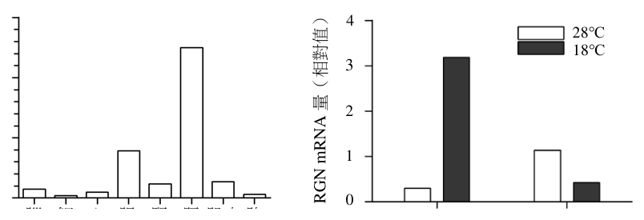
（A） 有絲分裂會出現紡錘絲，但減數分裂則無（B） 在分裂過程中，兩者都會發生同源染色體配對的現象（C） 單細胞生物體不會發生減數分裂，多細胞生物體則有行減數分裂的潛能（D） 這兩種分裂的方式是原核生物體及真核生物體共同具有的生命現象（E） 減數分裂使生物體親代與子代的體細胞染色體數目相同答案：（E）
詳解與考點 正解：題幹比較有絲分裂與減數分裂，關鍵是減數分裂在有性生殖中維持世代間體細胞染色體數恆定的作用。E：減數分裂使生殖細胞的染色體數減半為 n，受精後恢復為 2n，因此親代與子代的體細胞染色體數目相同，故 E 為正解。
A：有絲分裂與減數分裂都會形成紡錘絲，A 錯誤。
B：同源染色體配對，即聯會，只發生於減數分裂第一次前期，有絲分裂沒有此過程，B 錯誤。
C：某些單細胞真核生物也會行減數分裂產生配子；多細胞生物也僅特定細胞具有行減數分裂的潛能，C 錯誤。
D：原核生物以二分裂繁殖，不進行有絲分裂或減數分裂；這兩種分裂是具有細胞核的真核生物所見的分裂方式，D 錯誤。它看起來對，是因為原核與真核生物都能進行細胞分裂，但二分裂不等於有絲分裂或減數分裂。
本題考點：有絲分裂與減數分裂比較——兩者皆有紡錘絲，但聯會只在減數第一次前期發生；染色體數恆定判準——減數分裂使配子為 n，受精恢復 2n，故親子兩代體細胞染色體數相同。
第 2 題 （多選）
圖 1 為一個封閉生態系統之示意圖，由甲及乙兩個子系統構成。圖中的子系統之一表示植物供給人食物、氧氣及淨水，另一個子系統表示人供給植物二氧化碳及代謝水，並消耗食物，因而達成此系統之平衡。有關此系統圖所表達之資訊，下列哪些正確？（應選 2 項）
（A） 甲子系統之示意為光合作用（B） 乙子系統中的 \(\mathrm{O_2}\) 是由 \(\mathrm{CO_2}\) 分解而來（C） 乙子系統在植物細胞葉綠體中進行（D） 甲子系統內箭號右側可加上「代謝能量」之輸出（E） 乙子系統表示光合作用，可加上「太陽熱能」的輸入答案：（C）（D）
詳解與考點 正解：依物質流向辨認兩個子系統：人消耗植物供給的食物與氧氣，產生二氧化碳與代謝水；植物則利用二氧化碳與水製造食物與氧氣。依圖中箭號可判定甲為呼吸作用、乙為光合作用。C：乙為光合作用，進行於植物細胞的葉綠體，正確。D：甲為呼吸作用，分解食物時釋出代謝能量，箭號右側可加上「代謝能量」輸出，正確，故答案為 C、D。
A：甲的方向是食物與氧氣轉為二氧化碳、水並釋出能量，這是呼吸作用而非光合作用，A 錯誤。
B：光合作用釋出的 O2 來自 H2O 的分解，不是 CO2 分解，B 錯誤。
E：乙雖為光合作用，但其能量來源是太陽光能，不是太陽熱能，E 錯誤。
本題考點：光合作用與呼吸作用——光合作用為 CO2+H2O 在光能下形成有機物與 O2，發生於葉綠體；呼吸作用分解有機物並消耗 O2，產生 CO2、H2O 與代謝能量；氧氣來源要辨明為水而非二氧化碳。
第 3 題
有關葉片表皮組織的標本製作及觀察實驗，下列何者正確？
（A） 欲得紫背萬年青的下表皮組織時，需將葉片由下向上對折撕開（B） 洋蔥表皮細胞呈長方形，其細胞質中易觀察到流動中的葉綠體（C） 折撕法是將葉片對折反向撕開，在不平整處取下欲觀察的表皮（D） 可以利用亞甲藍液將細胞染色，使葉綠體外膜更容易被觀察（E） 為了區別細胞膜和細胞壁，需先將下表皮樣本浸泡在亞甲藍液中答案：（C）
詳解與考點 正解：題幹問葉片表皮的標本製作，關鍵在於折撕法藉由葉肉撕裂處露出的單層表皮取材。C：將葉片對折後反向撕開，在不平整的撕裂處取下欲觀察的表皮，正是折撕法的操作，故 C 為正解。
A：欲取紫背萬年青的下表皮，應由上向下撕，使撕開後的下表皮留在上層葉片；題述方向相反，A 錯誤。
B：洋蔥鱗葉表皮是非綠色組織，細胞質中不含葉綠體，無法觀察葉綠體流動，B 錯誤。
D：亞甲藍液主要染色細胞核等構造；葉綠體本身具有顏色，染色也不是為了觀察葉綠體外膜，D 錯誤。
E：區別細胞膜與細胞壁通常以高濃度蔗糖液造成質壁分離，不是浸泡亞甲藍液，E 錯誤。它看起來對，是因為亞甲藍液確可增加部分細胞構造的辨識度，但不能用來分開細胞膜與細胞壁。
本題考點：葉片表皮製片——折撕法須將葉片對折反向撕開，於葉肉撕裂的不平整處取單層表皮；植物細胞觀察判準——洋蔥鱗葉表皮無葉綠體，質壁分離用高濃度蔗糖液辨識細胞膜與細胞壁。
第 4 題 （多選）
有關孟德爾遺傳法則分離律的敘述，下列哪些正確？（應選 3 項）
（A） 紫茉莉花的顏色性狀有紅白之中間色，故不能呈現孟德爾因子的分離律（B） 人的 ABO 血型屬於複等位基因遺傳，但仍能用孟德爾因子的分離律解釋（C） 狗的體型大小其表徵不只二個，故不能由單一孟德爾因子表現其分離律（D） 人的紅綠色盲是性聯遺傳，其表徵在男女出現機率不同仍符合分離律（E） 人的身高和體重受後天影響甚鉅，故其遺傳完全不能以分離律解釋答案：（B）（C）（D）
詳解與考點 正解：分離律描述等位基因在形成配子時分離，顯隱性型態、等位基因數量或性聯位置不會取消此原理。B：ABO 雖為複等位基因，但個體仍只帶兩個等位基因，形成配子時仍分離，正確。C：狗的體型屬多基因性狀，不能由單一孟德爾因子說明，正確。D：紅綠色盲為 X 染色體性聯遺傳，男女表徵機率不同，但等位基因仍依分離律傳遞，正確。
A：紫茉莉的中間色屬不完全顯性；等位基因仍會分離，只是表現型不呈全顯性。
E：身高、體重雖受環境影響且涉及多基因，遺傳成分仍可由多個基因各自的分離來部分解釋，不能說完全不能。
本題考點：孟德爾分離律——同源染色體上的等位基因在配子形成時分開；不完全顯性、複等位基因與性聯遺傳都仍適用；多基因與環境影響只限制單一基因模型的解釋力。
第 5 題 （多選）
對於病毒的遺傳物質，下列敘述哪些正確？（應選 3 項）
（A） 有的是去氧核糖核酸，也有的是核糖核酸（B） 有一些以雙螺旋構造存在（C） 鳥糞嘌呤（G）的數量一定等於胞嘧啶（C）的數量（D） 遺傳訊息的傳遞一定要有蛋白質的參與（E） RNA 必先反轉錄為 DNA 才能進行蛋白質表現答案：（A）（B）（D）
詳解與考點 正解：題幹問病毒遺傳物質的共同或可能特性，須分辨核酸種類、股數與蛋白質表現過程。A：病毒遺傳物質可為 DNA，如腺病毒；也可為 RNA，如流感病毒，故正確。B：DNA 病毒的 DNA 可為雙螺旋構造，如疱疹病毒；部分 RNA 病毒也具有雙股 RNA，故正確。D：遺傳訊息的轉錄或轉譯需 RNA 聚合酶、核糖體等蛋白質參與，故正確。
C：G 的數量等於 C 只適用於雙股核酸的互補配對；單股 RNA 病毒中 G 不一定等於 C，故錯誤。它看起來對，是把雙股 DNA 的 Chargaff 法則誤推到所有病毒。
E：許多 RNA 病毒可直接以 RNA 為模板進行蛋白質表現，如小兒麻痺病毒；只有反轉錄病毒如 HIV 須先反轉錄為 DNA，故錯誤。
本題考點：病毒遺傳物質——病毒可含 DNA 或 RNA，並可為單股或雙股；鹼基數量判準——G=C 須有互補配對的雙股結構；RNA 病毒表現——只有反轉錄病毒須經 RNA→DNA。
第 6 題 （多選）
若將某開花多肉植株的若干大葉片置於土面上。一段時日後，發現其邊緣長出具小葉片的小苗。下列敘述哪些正確？（應選 2 項）
（A） 葉片變小是因為發生基因重組後再經過天擇的結果（B） 一代接一代地培養小葉植株，其葉片變小程度比由種子培養的更明顯（C） 該小苗長成大植株的過程，所增加的細胞沒經過染色體的聯會（D） 該小苗長大後成熟的植株，其生殖細胞喪失行減數分裂的能力（E） 由具小葉的小苗長成的植株與原植株的遺傳特性幾乎相同答案：（C）（E）
詳解與考點 正解：題幹描述大葉片邊緣長出小苗，屬葉插的無性生殖；小苗生長靠有絲分裂，遺傳物質與原植株幾乎相同。C：小苗長成大植株時增加的細胞經有絲分裂，沒有同源染色體聯會，正確。E：無性生殖產生的植株與原植株遺傳特性幾乎相同，正確。
A：葉片變小不是基因重組後再經天擇的結果；葉插不經配子結合，未發生該種重組。
B：代代葉插不會使葉片變小程度逐代累積，因遺傳物質大致不變。
D：由葉插長成的成熟植株仍能正常開花結果，生殖細胞仍可進行減數分裂，並未喪失此能力。
本題考點：無性生殖與細胞分裂——葉插屬無性生殖，後代基因型與親本幾乎相同；有絲分裂負責生長且不聯會，同源染色體聯會發生於減數分裂第一前期。
2017 年古生物學家利用已有的恐龍化石，配合相關分類群的資料，重新建立恐龍分類群間的演化關係如圖 2，並建議以此重建圖人決定恐龍的歸類範圍。波斯特鱷早期學者認為：「現生的麻雀和已滅絕的三角龍有甲西里龍
第 7 題
早期學者認為：「現生的麻雀和已滅絕的三角龍有一個最近的共同祖先；而此祖先所有的後代歸類為恐龍」。依圖2，早期學者認為的恐龍應該從哪一個共同祖先開始算起？
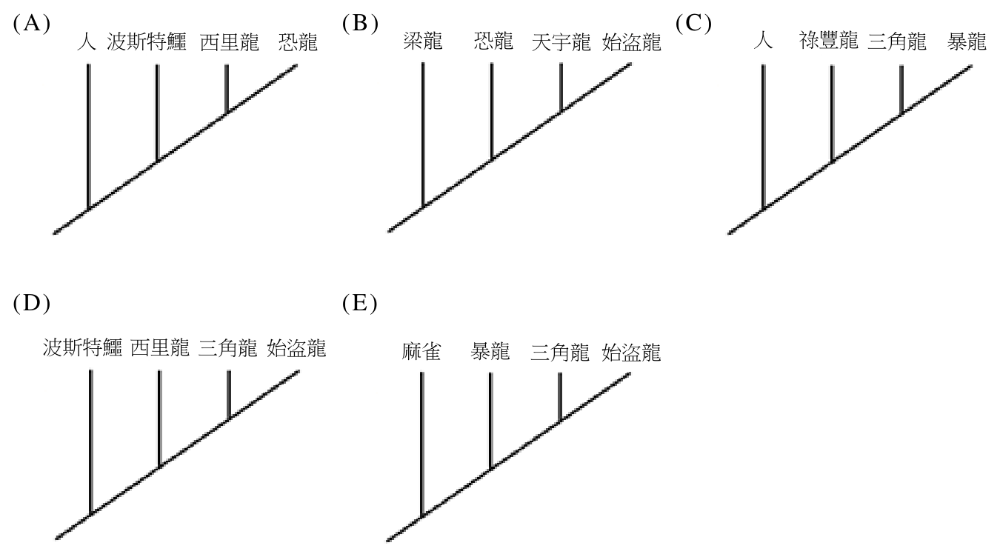
（A） 丁（B） 戊（C） 己（D） 庚（E） 辛答案：（D）
詳解與考點 正解：題幹以「麻雀和三角龍最近的共同祖先，以及此祖先所有後代」定義恐龍；在演化樹上，應從麻雀與三角龍兩支往回追溯，找兩支線最先匯合的節點。依圖 2，該最近共同祖先為庚，對應 D，故 D 為正解。
A：丁位於較早的分支位置，若從此處起算會把非恐龍類群納入，範圍過大，A 錯誤。
B：戊不是麻雀與三角龍兩支最先匯合的節點，不能同時作為兩者的最近共同祖先，B 錯誤。
C：己位於所需共同祖先之後，無法同時涵蓋麻雀與三角龍兩支，C 錯誤。
E：辛的位置更接近麻雀支，不能包含三角龍支，E 錯誤。它看起來對，是因為麻雀確屬此支系，但分類群的起點必須同時涵蓋題幹指定的兩個類群。
本題考點：支序分類——類群由指定兩類群的最近共同祖先及其所有後代構成；演化樹判讀——沿兩支向根部回溯，第一個匯合節點才是最近共同祖先。
第 8 題 （多選）
若依據圖 2 的演化關係，艾雷拉龍、祿豐龍和梁龍也屬於恐龍類群，則下列演化分支圖哪些正確？（應選 3 項）
本題選項為上圖中的 A／B／C／D，請對照圖片作答。
答案：（A）（C）（D）
詳解與考點 正解：官方答案為 ACD；惟本筆未收錄完整圖 2，A、B、D 的選項亦為空白，C、E 只剩破碎文字，以下判斷依原附圖保存的拓樸關係說明。關鍵在於分支圖必須讓恐龍形成單系群，並把波斯特鱷、西里龍置於恐龍類群之外。A：圖中恐龍成員源於同一最近共同祖先，外群未被納入恐龍支系，故 A 正確。C：圖中梁龍與三角龍、暴龍、麻雀同置於恐龍類群內，波斯特鱷、西里龍仍在外群位置，故 C 正確。D：圖中的共祖節點與外群位置可維持恐龍為單系群，故 D 正確。
B：依原附圖，分支配置使外群位置或恐龍內部的最近共同祖先不符，無法同時維持題幹所定的恐龍單系群，B 錯誤。它看起來對，是因為只看物種名稱是否出現，容易忽略分支圖判讀重點是共祖節點。
E：依原附圖，其分支拓樸或外群位置不符合圖 2 的親緣關係，不能作為指定恐龍類群的演化分支圖，E 錯誤。
本題考點：演化分支圖判讀——分類群是否為單系群，要看其是否包含最近共同祖先及該祖先的所有後代；外群判準——波斯特鱷、西里龍應位於恐龍類群之外；拓樸比較——比較共祖節點與分支關係，不以圖上物種名稱的排列順序判斷親緣遠近。
第 9 題 （多選）
卡里科女科學家、安布羅斯及魯夫昆三位學者，均因以研究 RNA 而獲頒諾貝爾醫學獎，後二者發現某特定 21~23 個核苷酸長的 microRNA，會與某些 RNA 配對結合，促其被降解而不表現。此舉得以正確地控制基因的功能，達成細胞的正常分化，並發育成個別的組織及器官。另外研究發現：有一個名為 let−7 的 microRNA 基因在動物界中相當保守（變化相對少），顯示此類 RNA 在動物體中的基本性及重要性。依此短文，下列敘述哪些正確？（應選 3 項）
（A） RNA 是基因表現過程中轉載遺傳訊息的物質（B） 頭腦細胞的 DNA 所含訊息比四肢細胞的 DNA 多（C） 動物的性狀表現一定會經過轉錄的過程（D） let−7 基因對應的 RNA 可以和某 RNA 配對成雙股（E） 天擇對 let−7 基因保留了相對多的突變型答案：（A）（C）（D）
詳解與考點 正解：短文指出 microRNA 與特定 RNA 配對後促其降解，並由此調控基因功能；須據基因表現流程與保守性判斷。A：RNA 在基因表現中負責轉載並傳遞 DNA 的遺傳訊息至轉譯，正確。C：動物性狀的表現須經由基因表現，DNA 必先轉錄成 RNA，正確。D：let-7 基因轉錄出的 microRNA 可與標的 RNA 依鹼基互補配對，形成雙股後促其降解，正確。
B：同一個體的頭腦細胞與四肢細胞所含 DNA 訊息量相同，差別在表現的基因不同，錯誤。
E：let-7 在動物界相當保守、變化少，表示不利突變多受天擇淘汰，並非保留相對多的突變型，錯誤。它看起來對，是因為「保守」容易被誤解為保留許多變異，實際上是序列變化相對少。
本題考點：基因表現流程——DNA 先轉錄為 RNA，再參與後續轉譯或調控；microRNA 調控——以互補配對結合標的 RNA 並促其降解；基因保守性判準——跨物種變化少通常表示重要功能受天擇維持。
第 10 題 （多選）
國際天文聯合會（IAU）於西元 2006 年討論行星的定義，最後決定太陽系內的天體，除了太陽以外，另外區分為行星、矮行星及小天體等。下列哪些天體屬於矮行星？（應選項） 3
（A） 水星（B） 穀神星（C） 鬩神星（D） 天狼星（E） 冥王星答案：（B）（C）（E）
詳解與考點 正解：題幹問 IAU 於 2006 年分類的矮行星，關鍵是「繞日公轉、重力使自身近圓球形、但未清除軌道附近天體」三項判準。B：穀神星是小行星帶最大天體，於 2006 年正式列為矮行星，故 B 正確。C：鬩神星是外海王星天體，質量甚至大於冥王星，於 2006 年列為矮行星，故 C 正確。E：冥王星原為第九大行星，於 2006 年重新分類為矮行星，故 E 正確。
A：水星是太陽系八大行星之一，已清除軌道附近天體，不符合「未清除軌道」的矮行星判準，A 錯誤。
D：天狼星是恆星，不是太陽系內繞日公轉的天體，D 錯誤。它看起來對，是因為名稱同樣常見於天文題，但恆星與矮行星的分類層級不同。
本題考點：IAU 天體分類——矮行星須繞日公轉、近圓球形且未清除軌道附近天體；分類判準——先分辨是否為太陽系繞日天體，再以是否清除軌道區分行星與矮行星。
第 11 題 （多選）
宇宙天體發出各式訊號。下列哪些訊號屬於電磁波？（應選 3 項）
（A） 微中子（B） 無線電波（C） 紅外線（D） X 射線（E） 重力波答案：（B）（C）（D）
詳解與考點 正解：題幹問「屬於電磁波」，判準是由交互振盪的電場與磁場傳播。B：無線電波是電磁波譜的波段。C：紅外線是電磁波譜的波段。D：X 射線也是電磁波譜的波段，故 B、C、D 為正解。
A：微中子是質量極輕、不帶電荷的基本費米子，主要透過弱作用力作用，不是電磁波。
E：重力波是時空曲率的漣漪，由加速質量產生；2015 年 LIGO 首次直接偵測到，與電磁波不同。它看起來對，是因為名稱同含「波」，但波動的物理量不同。
本題考點：電磁波分類——無線電波、紅外線、可見光、紫外線、X 射線等皆為電磁波；名詞辨析——微中子是粒子，重力波是時空擾動，不能因名稱有「波」就歸入電磁波。
第 12 題
當月球運行到地球與太陽之間且恰好排列成一直線，才會發生日食現象。有關日食，下列敘述何者正確？
（A） 每個月會發生一次日食（B） 發生日食當天，月相為滿月（C） 地表任一處在年當中至少發生一次日全食 12（D） 地表任一處發生日偏食的機會，大於發生日全食（E） 發生日全食的時候，月面會呈現暗紅色答案：（D）
詳解與考點 正解：日食時月球位於地球與太陽之間；月球本影投到地面的範圍很窄，半影範圍則較大，因此比較日全食與日偏食機率時要看本影、半影的涵蓋範圍。D：地表一地落在半影內的機會大於落在狹窄本影帶內的機會，所以發生日偏食的機會大於日全食，故 D 為正解。
A：月球軌道面與黃道面約有 5° 夾角，朔日不一定三者成一直線，並非每月都發生日食，A 錯誤。
B：日食發生時月球在地球與太陽之間，月相為新月（朔），不是滿月，B 錯誤。
C：日全食本影路徑狹窄且每次不同，地表任一地點不會保證每年都發生一次日全食，C 錯誤。
E：月面呈暗紅色是月全食時月球進入地球本影的現象；日全食是月球遮住太陽，E 錯誤。它看起來對，是因為兩者都與日、地、月接近一直線有關，但月食與日食的遮蔽對象不同。
本題考點：日食發生條件——新月時月球須位於日、地之間並接近交點；本影與半影判準——本影範圍窄形成日全食，半影範圍大形成日偏食；日月食辨析——月面暗紅是月全食，不是日全食。
第 13 題
冬、夏溫差會影響冰原的面積，進而影響地球平均反照率，造成氣候改變。陸地面積、與太陽的距離、以及黃赤交角的大小都可能影響冬、夏溫差。如果地表海陸分布的情況與現今相同，地球自轉及公轉在下列何種情形下，會在南半球或北半球出現最大的冬、夏溫差？
（A） 自轉軸傾角 40°（示意圖）（B） 自轉軸傾角 40°，傾斜方向與 A 相反（示意圖）（C） 自轉軸傾角 23.5°（示意圖）（D） 自轉軸傾角 23.5°，傾斜方向與 C 相反（示意圖）（E） 自轉軸傾角 0°（示意圖）答案：（A）
詳解與考點 正解：冬、夏溫差先看黃赤交角，傾角越大，兩季日照差異越大；再看近日點與遠日點是否使距離效應疊加。A：自轉軸傾角為 40°，是各圖中最大；圖示又使某半球的夏季在近日點、冬季在遠日點，夏季日照更強、冬季日照更弱，距離效應與傾角效應相加，故 A 為正解。
B：雖同為 40° 傾角，但自轉軸傾向與近、遠日點的配置未使同一半球的夏熱與冬冷效應同時加強，冬、夏溫差不如 A 大。它看起來對，是因為只比較傾角大小，忽略了公轉位置造成的距離效應。
C、D：兩圖傾角均為 23.5°，季節日照差異小於 40°，冬、夏溫差不會最大。
E：自轉軸傾角為 0°，沒有季節性的日照差異，冬、夏溫差最小，不可能最大。
本題考點：黃赤交角與季節——傾角越大，半球冬、夏日照差異越大；日地距離判準——夏季在近日點、冬季在遠日點時，距離效應會加大該半球的冬、夏溫差。
第 14 題 （多選）
某學校附近有斷層通過（圖 3 中，黑粗線所示），且 10 年前學校附近曾發生大地震，根據當時報導，此地震的震央位置如圖中星號所示。放置於學校地科教室的地震儀的波形顯示所在的區域向遠離斷層的方向運動。根據以上資料，下列敘述哪些正確？（應選 2 項）
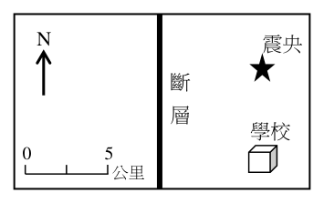
（A） 此斷層面往地下延伸方向為向東傾斜（B） 此斷層面往地下延伸方向為向西傾斜（C） 此斷層為平移斷層（D） 此斷層為逆斷層（E） 此斷層為正斷層答案：（A）（E）
詳解與考點 正解：官方答案為 AE；惟本筆未收錄圖 3，以下依原附圖所示的學校、震央、斷層跡線與位移方向判讀。依原附圖，學校位於斷層東側，地震儀顯示該區向遠離斷層的東方運動，震央亦在斷層東側。A：震央可視為震源在地表的投影，震央位於斷層跡線東側，表示斷層面往地下向東傾斜，A 正確。E：東側為上盤且向遠離斷層方向運動，符合上盤相對下滑、地殼張裂的正斷層特徵，E 正確。
B：依原附圖，震央位於斷層跡線東側，斷層面地下延伸方向應向東，不是向西，B 錯誤。
C：平移斷層以沿斷層走向的水平錯動為主，與原附圖呈現的上下盤相對運動不符，C 錯誤。
D：逆斷層是上盤相對上衝、地殼受壓而靠近，與學校所在區域遠離斷層的運動方向不符，D 錯誤。它看起來對，是因為地表運動也有水平方向，但仍須合併觀測點位置與斷層面傾向判斷。
本題考點：斷層運動判讀——以震央相對斷層跡線的位置推斷斷層面傾向，再以觀測點相對斷層的運動方向辨識上下盤位移；正逆斷層判準——上盤相對下滑、受張力者為正斷層，上盤上衝、受壓者為逆斷層。
第 15 題
下圖 4 為近百年來全球前五大規模的地震分布圖，皆屬於同一類型的板塊邊界。圖中白色線段標示板塊邊界，白色箭頭為指示板塊運動方向和大小的向量，箭頭線段越長代表運動速率越大。從震央分布和其相鄰近兩個板塊間互相作用的運動方向判斷，這五個地震同屬於下列哪種類型的板塊邊界/構造區域？規模9.0 1952/11/4 堪察加半島規模9.0 規模9.2 2011/3/11 1964/3/28 日本宮城縣外海阿拉斯加威廉王子灣規模9.1 2004/12/26 印尼蘇門答臘外海規模9.5 1960/5/22 智利中南部瓦爾迪維亞圖4
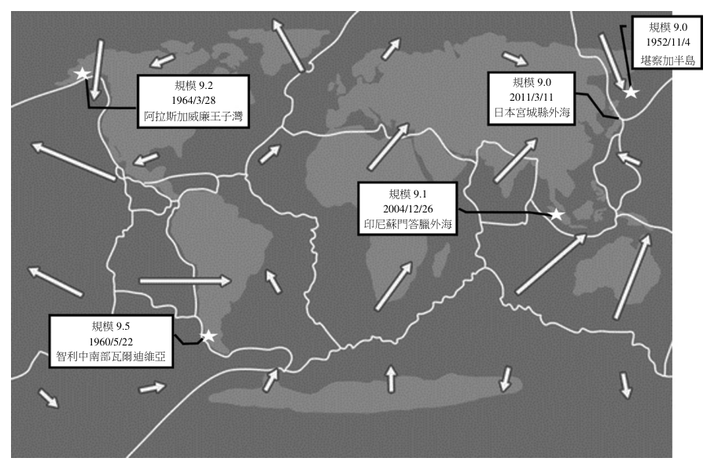
（A） 張裂型（B） 聚合型（C） 錯動型（D） 熱點（E） 平移斷層型答案：（B）
詳解與考點 正解：題幹的五起規模 9 以上地震都位於海溝隱沒帶，且圖中相鄰板塊箭頭相向、彼此靠近；關鍵是「運動方向相向」觸發板塊擠壓的判斷。B：聚合型邊界由兩板塊會聚，常形成隱沒帶與巨大逆衝型地震，智利 9.5、阿拉斯加 9.2、蘇門答臘 9.1、日本宮城外海與堪察加 9.0 均符合，故 B 為正解。
A：張裂型邊界的板塊運動方向相背離，多見於中洋脊，和圖示相向運動不合。
C、E：錯動型與平移斷層型皆以沿邊界的水平滑移為主，箭頭應大致平行邊界，非相向擠壓。
D：熱點是板塊內部的岩漿活動，不是兩板塊相互作用的邊界類型。
本題考點：板塊邊界判讀——箭頭相向且震央沿海溝分布，判為聚合型隱沒帶；箭頭相背離為張裂型，平行錯移為錯動型，板塊內火山鏈才考慮熱點。
第 16 題 （多選）
岩石有不同的成因與特徵，有關三大岩類，以及與板塊邊界關係的敘述，下列哪些正確？（應選 2 項）
（A） 臺灣位處造山帶，故地表上分布面積最廣的是火成岩（B） 沉積岩形成時的溫度低，以後受到高溫作用也不會熔融成岩漿（C） 變質岩經風化、侵蝕、搬運和沉積等作用，可形成沉積岩（D） 火成岩形成溫度比變質岩高，未來不會變質成變質岩（E） 張裂型板塊邊界附近常見火成岩答案：（C）（E）
詳解與考點 正解：本題以岩石循環及板塊邊界環境判斷。C：變質岩露出地表後，可經風化、侵蝕、搬運與沉積，堆積並成岩形成沉積岩，符合岩石循環，C 正確。E：張裂型板塊邊界附近有地函物質上湧與火山活動，例如中洋脊常見玄武岩等火成岩，E 正確。
A：臺灣雖位於造山帶，但地表分布面積最廣的是沉積岩，不是火成岩，A 錯誤。
B：沉積岩日後若在地殼深處受到足夠高溫，仍可能熔融成岩漿；岩石種類可在循環中轉換，B 錯誤。
D：火成岩冷卻後若再受高溫、高壓作用，仍可變質成變質岩，D 錯誤。它看起來對，是因為火成岩的初始形成溫度較高，但岩石後續所受的環境條件才決定能否變質。
本題考點：岩石循環——任何岩類可因風化、沉積、變質或熔融等作用轉換；三大岩類判準——風化侵蝕搬運沉積可形成沉積岩，高溫高壓可促成變質；張裂型板塊邊界——地函上湧與火山活動旺盛，常見火成岩。
第 17 題
對於海水鹽度的描述，以下的敘述何者不正確？
（A） 赤道附近由於雨量少且蒸發旺盛，海水鹽度因而增高（B） 開放大洋的海水，每公斤含鹽量大約 35 公克（C） 因為淡水匯入稀釋的原因，河口處的海水鹽度較低（D） 黑潮表層水的鹽度較周邊的海水為高（E） 北極海（北冰洋）上層海水的鹽度比印度洋上層海水鹽度較低答案：（A）
詳解與考點 正解：題幹問「不正確」，關鍵是比較赤道與副熱帶的降水、蒸發條件；赤道附近對流旺盛、降雨豐沛，雖蒸發強，仍受大量降水稀釋，整體鹽度不高。蒸發強而降水少、鹽度最高的區域反而是約南北緯 20–30° 的副熱帶高壓帶，故 A 為錯誤敘述，為正解。
B：開放大洋平均每公斤海水約含鹽 35 公克，即約 35 g/kg，B 正確。
C：河口受淡水匯入稀釋，海水鹽度較低，C 正確。
D：黑潮源於副熱帶高壓帶海域，表層水鹽度較周邊海水高，D 正確。
E：北極海上層受融冰與淡水注入影響，鹽度低於印度洋上層海水，E 正確。它看起來對，是因為赤道氣溫高、蒸發旺盛，但忽略降水量同樣極大。
本題考點：海水鹽度分布——蒸發增加鹽度，降水與淡水匯入降低鹽度；緯度判讀——副熱帶高壓帶降水少、蒸發強而鹽度高，赤道則因降水多而鹽度較低。
第 18 題
一般以等級描述星球亮度，視星等數字小代表亮度強。根據長期記錄，發現木星的亮度在 −3（負 3）星等及 −2（負 2）星等之間變化。已知木星半徑約是地球 11 倍，距離太陽約為日地距離的 5 倍，而土星半徑約為地球 9 倍，距離太陽約為日地距離的 10 倍，反照率則與木星類似。在地面觀測土星時，其最大亮度之星等 X，下列何者正確？
（A） \( X < -3 \)（B） \( -3 < X < -2 \)（C） \( X > -2 \)（D） \( X > 6 \)（E） X 依照地球與太陽的距離而不一定答案：（C）
詳解與考點 正解：行星反射亮度同時受半徑、日星距離與星地距離影響，應先比較土星與木星的反射光通量，再把亮度比換成星等差。最大亮度時，木星、土星與地球大致位於太陽同側，可取木星到地球約 5−1=4 個日地距離，土星到地球約 10−1=9 個日地距離。土星相對木星的亮度比約為 (9/11)²×(5/10)²×(4/9)²=81/121×1/4×16/81=16/484，約為 0.033。星等差=2.5×log10(1/0.033)，約為 2.5×1.48=3.7。木星星等介於 −3 與 −2，因此土星最大亮度的星等約介於 0.7 與 1.7，必有 X>−2，故 C 為正解。
A：X<−3 代表土星比木星最亮時還亮，但計算所得土星亮度僅約為木星的 0.033 倍，方向相反。
B：−3<X<−2 代表土星與木星亮度相近；實際依題給半徑與兩段距離計算，土星約比木星暗 3.7 星等，因此不在此範圍。
D：計算所得 X 約介於 0.7 與 1.7，並未大於 6；把距離衰減估得過大才會得到此結果。
E：比較最大亮度時，地球到太陽的距離是題目所用的共同距離單位，並可據此估算兩行星到地球的距離，不會使 X 無從判定。
本題考點：反射亮度比較——亮度∝半徑²／（日星距離²×星地距離²）；星等差判準為 2.5×log10(較亮者亮度／較暗者亮度)，星等數字愈大表示愈暗。
第 19 題 （多選）
國際太空站（簡稱 ISS）主要用於進行微重力環境下的各種實驗，其繞行地球的週期為 90 分鐘，而任何質量的同步衛星，其繞行地球的週期和地球自轉的週期相同。已知沿圓形軌道繞行地球的物體，其動能 T 與重力位能U的關係為 2 T = − U 。若與某同步衛星的軌道皆近似圓形，則與該同步衛星比較時，下列敘述 ISS ISS 哪些正確？（應選 2 項）
（A） ISS 的軌道半徑一定比較大（B） ISS 的總力學能一定比較大（C） ISS 的重力位能一定比較大的速率一定比較大（D） ISS（E） ISS 的加速度量值一定比較大答案：（D）（E）
詳解與考點 正解：題幹給 ISS 週期為 90 分鐘、同步衛星週期為 24 小時；依圓軌道週期與軌道半徑的關係，週期較短表示 ISS 軌道半徑較小。D：圓軌道速率 v=√(GM/r)，r 較小時 v 較大，所以 ISS 的速率較大，D 正確。E：向心加速度 a=GM/r²，r 較小時 a 較大，所以 ISS 的加速度量值較大，E 正確。
A：ISS 的週期較短，軌道半徑應較小，不是較大，A 錯誤。
B：由 2T=-U，總力學能 E=T+U=T-2T=-T。軌道半徑較小時動能 T 較大，故 E=-T 較小、數值更負，ISS 的總力學能不是較大，B 錯誤。
C：軌道半徑較小時，重力位能 U=-GMm/r 較小、數值更負，不是較大，C 錯誤。它看起來對，是因為「較高」常被誤當成位能較大；本題 ISS 反而位於較低軌道。
本題考點：圓形軌道比較——週期較短判定軌道半徑較小；圓軌道速率與加速度——v=√(GM/r)、a=GM/r²，半徑愈小則速率與加速度量值愈大；軌道能量判準——E=-T，低軌道的總力學能較小且更負。
第 20 題
已知冰的融化熱為 80 kcal/kg 且 1 kcal 約為 4 kJ。全球比特幣一年運作所消耗的電能若完全轉換為熱能，約可融化多少公斤 0℃的冰山？
（A） 10¹⁰（B） 10¹²（C） 10¹⁶（D） 10²⁰（E） 10²⁴答案：（B）
詳解與考點 正解：題幹給冰的融化熱與能量換算，應先把比特幣耗電量由 J 換成 kcal，再用 Q=m×融化熱求質量。B：4.3×10^17 J÷（4×10^3 J/kcal）＝1.075×10^14 kcal，約為 10^14 kcal；m=Q÷80=1.075×10^14÷80=1.34375×10^12 kg，約為 10^12 kg，故 B 正確。
A：10^10 kg 比正確量級少 2 個數量級，未正確處理 1 kcal=4×10^3 J 的換算。
C：10^16 kg 比計算結果大 4 個數量級，與融化熱除法不符。
D：10^20 kg 比計算結果大 8 個數量級，顯然非由 Q÷80 得出。
E：10^24 kg 比計算結果大 12 個數量級，與單位換算及熱量公式不符。
本題考點：相變熱量——0℃冰融化用 Q=mL；單位換算——1 kcal≈4 kJ=4×10^3 J，先統一能量單位再代入；科學記號估算——保留主要量級可判定選項。
第 21 題
烏山頭水庫有效蓄水量約為 8.0×10⁷ m³，玉山高度約 4000 m。若將全球比特幣運作一年所消耗的電能完全轉換為力學能，且忽略水庫深度的影響，則約可將多少座烏山頭水庫的有效蓄水量從海平面抬升至玉山山頂？（水的密度為 1000 kg/m³、重力加速度為 10 m/s²）
（A） 10²（B） 10⁵（C） 10⁸（D） 10¹¹（E） 10¹⁴答案：（A）
詳解與考點 正解：本題將電能全部轉為把水抬升的重力位能，應先算一座水庫水的質量，再用 E=mgh 求每座所需能量。每座水庫的水量為 8.0×10⁷ m³，質量 m=1000×8.0×10⁷＝8.0×10¹⁰ kg；高度 h=4000 m=4.0×10³ m。每座所需能量 E₁＝mgh=8.0×10¹⁰×10×4.0×10³＝32×10¹⁴＝3.2×10¹⁵ J。可抬升的座數 n=4.3×10¹⁷／3.2×10¹⁵＝1.34375×10²，約為 10²。A：10² 符合，故 A 為正解。
B：代入已算得 n=1.34375×10²，不是 10⁵；10⁵ 比正確座數大約 7.4×10² 倍，B 錯誤。
C：代入已算得 n=1.34375×10²，不是 10⁸；10⁸ 比正確座數大約 7.4×10⁵ 倍，C 錯誤。
D：代入已算得 n=1.34375×10²，不是 10¹¹；10¹¹ 比正確座數大約 7.4×10⁸ 倍，D 錯誤。
E：代入已算得 n=1.34375×10²，不是 10¹⁴；10¹⁴ 比正確座數大約 7.4×10¹¹ 倍，E 錯誤。
本題考點：重力位能——抬升物體所需能量以 E=mgh 計算，體積先乘密度換為質量；科學記號估算——4000 m=4.0×10³ m，逐步合併係數與 10 的次方後，再以總能量除單位所需能量判斷數量級。
搭載火星探測器的太空船，加速脫離地球引力後，以等速飛行一段距離，然後減速準備登陸火星，過程中太空船持續遠離地球，歷經約 200 天的飛行抵達火星。從火星以電磁波傳訊到地球，約需 10 分鐘才能收到訊號。太空船飛行過程持續向地球傳送電磁波，用以監測飛行速度。依據以上資料，回答下列問題。
第 22 題
假設太空船飛行的距離與從火星傳訊到地球的距離大致相同，則該太空船的平均飛行速率約為多少？（真空中的光速約為 3×10⁸ m/s）
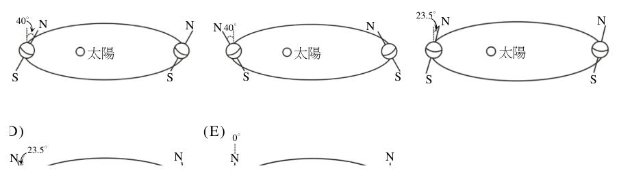
（A） 10 m/s（B） 10² m/s（C） 10⁴ m/s（D） 10⁶ m/s（E） 10⁸ m/s答案：（C）
詳解與考點 正解：題幹給「火星傳訊到地球約需 10 分鐘」與飛行 200 天，關鍵方法是先以電磁波速率求距離，再以平均速率＝距離÷時間。光速 c=3×10^8 m/s。訊號時間為 10×60=600 s，所以地球與火星距離 d=c×t=3×10^8×600=1.8×10^11 m。太空船飛行時間為 200×24×3600=17,280,000 s=1.728×10^7 s。平均速率 v=d÷t=1.8×10^11÷1.728×10^7≈1.04×10^4 m/s，約為 10^4 m/s；C 對應 10^4 m/s，故 C 為正解。
A：10 m/s 比計算值 1.04×10^4 m/s 小約 10^3 倍，錯在未以 200 天換算為秒或誤估指數；A 錯誤。
B：10^2 m/s 比計算值小約 10^2 倍，未正確處理距離與時間的科學記號次方；B 錯誤。
D：10^6 m/s 比計算值大約 10^2 倍，將 200 天的秒數低估會得到此類過大結果；D 錯誤。
E：10^8 m/s 接近光速，誤把訊號傳播速率當成太空船平均速率；E 錯誤。它看起來對，是因為題幹直接給光速，但光速只用來換算地球與火星間的距離，不能直接當作太空船速度。
本題考點：平均速率估算——先統一單位為 m、s，再用 v=d÷t；電磁波傳播——距離＝光速×傳訊時間；科學記號除法——10^11÷10^7=10^4。
第 23 題 （多選）
太空船停在地球表面上所發出的電磁波由地球監控站測得的頻率為 \(f_0\)。若太空船飛行過程，從地球監控站所測得的電磁波頻率為 \(f\)，則下列過程的頻率關係，哪些正確？（應選 2 項）
（A） 加速過程 \(f < f_0\)（B） 加速過程 \(f = f_0\)（C） 等速過程 \(f = f_0\)（D） 等速過程 \(f < f_0\)（E） 減速過程 \(f > f_0\)答案：（A）（D）
詳解與考點 正解：官方答案為 AD。本題依都卜勒效應判讀：波源遠離觀測者時測得頻率低於原頻率（f<f0），接近時高於原頻率（f>f0），且相對徑向速度愈大、偏移愈大。題幹敘明太空船「持續遠離地球」，據此加速階段遠離速度變大、頻率更低，A 的 f<f0 成立。
B：加速本身不決定 f 與 f0 的大小關係；唯有相對徑向速度為 0 時才會 f=f0，B 錯誤。
C：等速只表示速率不變，太空船仍在遠離，相對徑向速度不為 0，頻率不會等於 f0，C 錯誤。
E：減速時太空船仍在遠離，頻率仍低於 f0，只是較接近 f0，並非 f>f0，E 錯誤。
本題考點：都卜勒效應方向判準——先確認波源是接近或遠離（遠離 f<f0、接近 f>f0），再看速率變化決定偏移大小；速率與方向須分開看——「加速／減速」講的是速率變化，「接近／遠離」才決定頻率高於或低於原頻率。（本題 D 選項文字在現有資料中與題幹「持續遠離」不相容，疑為選項轉錄缺漏，已標為待校題。）
第 24 題
下列關於原子能階的敘述，何者錯誤？
（A） 原子中的電子可能處在不同的能階（B） 一個氫原子雖然只有一個電子，但能階躍遷時可能發射不同波長的光子（C） 原子中的電子吸收能量後，可能從較低的能階躍遷到較高的能階（D） 為了使處於穩定狀態之原子的電子維持在特定的能階上，外界必須持續提供特定能量的光子（E） 原子中的電子從一個能階躍遷到另一個能量較低的能階時，會放出光子答案：（D）
詳解與考點 正解：題幹問「何者錯誤」，關鍵在穩定能階是否需外界持續供能。D：處於穩定狀態（如基態）的電子可自然維持在特定能階，並不需要外界持續提供特定能量的光子，故 D 為正解。
A：電子可處在不同能階，例如基態或激發態，正確。
B：氫原子雖只有一個電子，不同能階間的躍遷仍可放出不同波長的光子，形成線光譜，正確。
C：電子吸收恰當能量後，可能由較低能階躍遷至較高能階，正確。
E：電子由高能階躍遷至較低能階時，能量差以光子形式放出，正確。
本題考點：原子能階與光子躍遷——電子吸收能量可升至高能階，降至低能階會放出能量差的光子；穩定能階判準——電子處於穩定能階不需持續由外界供能。
第 25 題
科學家進行電子雙狹縫實驗，成功觀測到電子經過雙狹縫後產生干涉分布，其圖樣與光通過雙狹縫後的干涉圖樣類似，證明了粒子也具有波動性。下列何者最可能為科學家觀察到大量電子經過雙狹縫後的干涉分布？
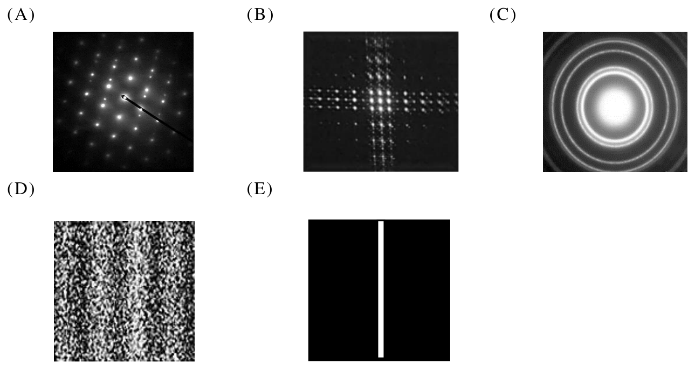
本題選項為上圖中的 A／B／C／D，請對照圖片作答。
答案：（D）
詳解與考點 正解：題幹關鍵是電子通過「雙狹縫」後具有與光相似的干涉分布；大量電子逐一累積時，螢幕上會形成明暗相間的條紋，亮紋處到達機率高、暗紋處到達機率低。D 圖由密集點構成明暗交錯的縱向條紋，正是大量電子雙狹縫干涉累積的結果，故 D 為正解。
A：規則排列的繞射亮點較符合晶體的 X 光或電子繞射圖樣，不是雙狹縫造成的條紋干涉，A 錯誤。
B：十字狀光斑不是雙狹縫所形成的平行明暗條紋，B 錯誤。
C：同心圓環較符合單孔或晶體粉末繞射，並非雙狹縫干涉分布，C 錯誤。它看起來對，是因為同心圓同樣具有明暗交替，但其幾何形狀不符合雙狹縫的平行條紋。
E：僅一條亮帶是單狹縫、無干涉時較可能出現的結果，缺少雙狹縫的多條明暗相間結構，E 錯誤。
本題考點：物質波——電子也具有波動性；雙狹縫干涉判準——大量粒子累積後，應出現與雙狹縫平行的明暗相間條紋，而非單一亮帶、同心圓或規則點陣。
第 26 題
有關物質間的基本交互作用的敘述，下列何者正確？
（A） 強力作用範圍涵蓋於整個原子（B） 地板支撐體重的接觸力，其來源是電磁力的作用（C） 兩物體接觸時極為靠近，故萬有引力為摩擦力的主要來源（D） 原子中電子繞行原子核類似於行星繞行地球，是靠萬有引力的束縛（E） 強力仍不足以克服質子間的相斥靜電力，須加上弱力才能使質子束縛於原子核中答案：（B）
詳解與考點 正解：題幹問基本交互作用，關鍵是辨識宏觀接觸力的微觀來源。B：地板的正向力與摩擦力來自原子間電子雲的電磁排斥作用，並受包立不相容原理影響，因此接觸力的來源是電磁力，故 B 為正解。
A：強力作用範圍僅約 10⁻¹⁵ m 的費米尺度，遠小於原子約 10⁻¹⁰ m 的尺度，不能涵蓋整個原子。
C：兩物體接觸時的摩擦力主要來自電磁力，不是萬有引力。
D：電子受原子核束縛主要靠電磁力的靜電引力，萬有引力在原子尺度遠弱於靜電力。
E：使質子束縛於原子核中的強力足以克服質子間的靜電斥力，弱力不負責核子束縛。
本題考點：四種基本交互作用——接觸力、摩擦力與原子束縛優先判為電磁力；強力作用於核子且範圍極短，能克服核內質子的靜電斥力；萬有引力在原子尺度不可作為主要解釋。
第 27 題
如圖 5 所示，目前許多手機可以進行無線充電。充電時，手機和充電器上各自的線圈系統對齊靠近、靜止置放，而充電器上的線圈電流會隨時間快速變化。在充電的過程中，下列敘述何者正確？
（A） 電流經由導線從充電器流向手機（B） 手機上之線圈系統四周的磁場始終保持不變（C） 手機電池所獲得的能量等於充電器所輸出的能量圖5（D） 手機和充電器上的兩個線圈系統之間會有磁力線通過（E） 充電器上的線圈會隨時間漸漸發熱，手機上的線圈不會答案：（D）
詳解與考點 正解：題幹指出充電器線圈電流隨時間快速變化，這會造成變動磁場穿過手機線圈，觸發電磁感應。D：充電器與手機的兩個線圈之間有磁力線通過，手機線圈的磁通量因而改變並感應出電流為電池充電，故 D 為正解。
A：兩者沒有導線相連，能量由磁場傳遞，不是電流經導線從充電器直接流向手機。
B：手機線圈四周的磁場會隨充電器線圈電流變化，不會始終保持不變。
C：傳遞過程有電阻發熱與漏磁等損耗，手機電池獲得的能量小於充電器輸出的能量。
E：手機線圈也有感應電流與電阻，因此同樣會發熱。
本題考點：電磁感應——穿過線圈的磁通量改變時產生感應電流；無線充電——能量透過變動磁場耦合傳遞，無須兩裝置以導線直接連接；能量守恆判準——實際系統有損耗，輸入能量不會全數轉為電池能量。
化合物甲與乙是啤酒苦味最主要的來源，其結構如圖 6 所示。在異辛烷溶液中，這兩個分子都會吸收波長 275 nm 的紫外光，且吸光度與濃度成正比。化合物甲與乙皆為弱酸，在水中可部分解離成 \(\mathrm{H^+}\) 與它們各自的酸根。「國際苦度單位」是啤酒釀製過程的一項重要指標，大部分啤酒的苦度介於 10 到 100 之間，其簡易測量方法如下：步驟一、取 5.0 mL 的啤酒樣品，加入 12.5 mL 的異辛烷和 0.5 mL 的酸；步驟二、充分搖晃混合，待液體分層後，測量異辛烷層在 275 nm 的吸光度；步驟三、此吸光度乘以 50 即為該啤酒樣品的「苦度」。淑芬同學對某品牌的啤酒進行了四次的苦度測量，每次的實驗條件如表 1 所示。
第 28 題 （多選）
下列相關的敘述，哪些正確？（應選 2 項）
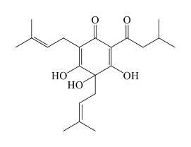
表 1 實驗 啤酒 (mL) 酸的種類與量 (mL) 異辛烷 (mL) 苦度 一 5.0 鹽酸 12 M HCl (aq) 0.5 12.5 26.5 二 5.0 硫酸 6 M \(\mathrm{H_2SO_4}\) (aq) 0.5 12.5 28.7 三 5.0 醋酸 1 M \(\mathrm{CH_3COOH}\) (aq) 0.5 12.5 8.8 四 5.0 鹽酸 12 M HCl (aq) 0.5 25.0 ？
（A） 化合物甲的分子式為 \(\mathrm{C_{21}H_{30}O_5}\)（B） 化合物甲與乙皆具有 20 個碳原子（C） 化合物甲與化合物乙互為異構物（D） 苦度與化合物甲與乙的總濃度成反比（E） 加入異辛烷的目的是為了使啤酒與實驗所添加的酸能夠更均勻混合答案：（A）（C）
詳解與考點 正解：題幹的圖 6 結構與吸光度條件是判斷依據；先依結構數原子、再以「同分子式而結構不同」判斷異構物。A：由圖 6 數得化合物甲有 21 個碳、30 個氫與 5 個氧，分子式為 C21H30O5，故 A 正確。C：甲與乙分子式相同，但一者為六員環的醯基間苯三酚衍生物（葎草酮型），另一者為五員環異構物（異葎草酮型），環大小與原子排列不同，互為同分異構物，故 C 正確。
B：甲、乙各有 21 個碳原子，不是 20 個，B 錯誤。
D：在異辛烷溶液中，吸光度與濃度成正比；苦度＝吸光度×50，因此苦度也與甲、乙總濃度成正比，不是成反比，D 錯誤。
E：異辛烷是非極性萃取溶劑，用來萃取苦味分子、待分層後測量異辛烷層的吸光度，不是為了使啤酒與所加酸均勻混合，E 錯誤。它看起來對，是因為步驟中確實要充分搖晃，但搖晃是促進萃取，靜置後仍須分層。
本題考點：結構式與分子式——逐一計數 C、H、O 後判斷分子式；同分異構物判準——分子式相同而原子連接或排列不同；分光與萃取——吸光度與濃度成正比，非極性溶劑用於萃取後分層測定。
第 29 題 （多選）
下列關於實驗的敘述，哪些正確？（應選 2 項）
（A） 實驗三的苦度值與實驗一、二差異大，說明實驗所使用的酸的強弱會影響苦度值的測量（B） 實驗四中的苦度數值約為 53（C） 若在實驗一中，不加入鹽酸，改為加入 0.5 mL 的 12 M NaOH(aq)，則水溶液中酸根的濃度會下降（D） 若在測量方法使用 10.0 mL 的啤酒樣品，其他步驟不變，則量測的苦度值會變低（E） 步驟二使用到萃取法答案：（A）（E）
詳解與考點 正解：題幹比較同品牌啤酒在改變酸種與異辛烷體積後的測量，關鍵是弱酸的解離平衡與有機溶媒萃取。A：原題表1所列實驗三改用弱酸醋酸，苦度 8.8 明顯低於實驗一鹽酸的 26.5 與實驗二硫酸的 28.7，顯示酸的強弱會影響苦度測量；但本筆輸入未附表1，這些數值無法由現有題面再次核對。E：原題步驟二經搖晃、分層後測量異辛烷層，是利用兩相溶解度差異使苦味分子進入異辛烷層，屬萃取法；本筆亦未保留步驟內容。
B：依原題表1，實驗四將異辛烷由 12.5 mL 增為 25.0 mL；若萃出的溶質量近似不變，濃度約變為 12.5÷25.0=1/2，苦度由約 26.5 變為 26.5×1/2=13.25，約為 13，不是 53。現有輸入未附表1，因此不能單憑本筆題面驗算表中條件。
C、D：兩個選項在輸入中分別截斷於「改為加入」與「測量方法使用」，欠缺完整敘述，無法判讀其所主張的實驗操作。
本題考點：弱酸解離與萃取——加入強酸會使弱酸平衡偏向未解離的中性分子，較易進入非極性的異辛烷層；吸光度與濃度成正比，溶媒體積增加而溶質量近似不變時，濃度與吸光度會下降；混合兩種互不相溶液體、分層後取其中一層分析，即為萃取操作。
第 30 題 （多選）
關於物質純化與分離的敘述，下列哪些正確？（應選 2 項）
（A） 利用再結晶純化硝酸鉀，以水為溶劑會比汽油較為合適（B） 硫酸鈉晶體可由飽和的藍色硫酸銅水溶液中結晶獲得（C） 將食鹽水加熱，蒸餾出部分純水，而剩餘的溶液可再結晶獲得氯化鈉（D） 利用乙酸乙酯萃取綠色樹葉的萃取液，然後在一大氣壓下進行蒸餾分離，可以將葉綠素餾出（E） 硝酸鉀與氯化鉀的混合水溶液，可以用濾紙層析方法將兩者分離答案：（A）（C）
詳解與考點 正解：本題比較各種純化與分離方法的適用條件，關鍵是再結晶要選能溶解目標物且溫度差異大的溶劑，蒸餾則可利用揮發性差異。A：硝酸鉀 KNO₃ 的溶解度隨溫度變化極大，水是極性溶劑，適合溶解離子化合物 KNO₃；汽油為非極性溶劑，不適合溶解 KNO₃，故 A 正確。C：加熱食鹽水時，水先汽化並冷凝為部分純水；剩餘溶液濃縮後再蒸發、冷卻，可使 NaCl 析出，故 C 正確。
B：飽和藍色硫酸銅水溶液結晶析出的應是硫酸銅 CuSO₄，不會無中生有形成硫酸鈉，B 錯誤。
D：常壓蒸餾時可蒸出的主要是溶劑乙酸乙酯；葉綠素分子量大、沸點極高，不能以一大氣壓蒸餾餾出，D 錯誤。它看起來對，是因為萃取後確實可再以蒸餾處理，但蒸餾分離的是揮發性溶劑，不是葉綠素。
E：KNO₃ 與 KCl 都是離子化合物且不具揮發性，不能以濾紙層析依極性差異分離；紙層析較適合有機色素等非電解質分子，E 錯誤。
本題考點：再結晶——選擇對目標物具適當溶解度且溫度變化明顯的溶劑，離子化合物通常優先考慮極性溶劑；蒸餾判準——利用揮發性差異，常壓蒸餾會先取得低沸點且可揮發的成分；分離法選擇——須依物質的溶解度、揮發性與極性判斷。
第 31 題 （多選）
乙酸和乙醇在硫酸催化下，可進行酯化反應如式 1，假設乙酸與乙醇皆反應完全無殘留，蒸餾後可製得乙酸乙酯。氯化氫和氫氧化鈉的水溶液可進行反應如式 2，與酯化反應類似，可產生一分子的水。
CH₃COOH(aq) ＋ C₂H₅OH(l) —〔硫酸、Δ〕→ CH₃COOC₂H₅(l) ＋ H₂O(l) 式 1
HCl(aq) ＋ NaOH(aq) —〔室溫〕→ NaCl(aq) ＋ H₂O(l) 式 2
比較這二類反應，試問下列敘述，哪些正確？（應選 3 項）
（A） 式 1 與式 2 的反應皆可寫成淨離子反應式：H⁺(aq) ＋ OH⁻(aq) → H₂O(l)（B） 乙酸與氯化氫溶於水，可解離出 H⁺，兩者皆為電解質（C） 乙酸與氯化氫溶於水，可解離出 H⁺，兩者皆為離子化合物（D） 利用蒸餾法可取得乙酸乙酯，是利用產物間沸點不同的性質做分離（E） 式 2 為放熱反應答案：（B）（D）（E）
詳解與考點 正解：題幹要比較酯化與鹽酸、氫氧化鈉水溶液反應，關鍵在於反應物的電解質與化合物性質、蒸餾分離原理及中和反應能量。B：乙酸 CH3COOH 溶於水會部分解離出 H+，是弱酸電解質；氯化氫 HCl 溶於水會完全解離出 H+，是強酸電解質，兩者皆為電解質，正確。D：蒸餾利用沸點不同分離；乙酸乙酯沸點約 77°C，乙醇約 78°C，水約 100°C，乙酸約 118°C，故原理正確。E：HCl 與 NaOH 的酸鹼中和反應會放熱，正確。
A：式 2 可寫成淨離子反應式 H+(aq)+OH−(aq)→H2O(l)，但式 1 是乙酸與乙醇的酯化反應，涉及共價分子且乙酸不完全離子化，不能同樣寫成此淨離子反應式。它看起來對，是因為兩式皆生成水，卻不能只由產物相同就判定淨離子反應式相同。
C：乙酸與氯化氫溶於水都可產生 H+，但兩者本身皆為共價化合物，不是離子化合物；是否為電解質須看水溶液能否產生可移動離子，不能等同於離子化合物。
本題考點：電解質——酸溶於水可形成離子，弱酸部分解離、強酸完全解離；淨離子反應式——先確認反應物在水中實際存在的粒子，不能因皆生成水而套用中和式；蒸餾——利用各物質沸點差異分離；酸鹼中和——強酸與強鹼的中和通常為放熱反應。
第 32 題
萊克多巴胺俗稱「瘦肉精」，可作為動物飼料添加物，用以幫助肌肉生長，減少體脂肪。將「瘦肉精」樣品進行元素分析，發現含有重量百分比 71.75% 的碳、7.65% 的氫、4.65% 的氮與 15.95% 的氧，試問其分子式為何？（原子量：H＝1.0，C＝12.0，N＝14.0，O＝16.0）
（A） \(\mathrm{C_{18}H_{24}N_2O_2}\)（B） \(\mathrm{C_{17}H_{22}N_2O_2}\)（C） \(\mathrm{C_{18}H_{23}NO_3}\)（D） \(\mathrm{C_{17}H_{21}NO_4}\)（E） \(\mathrm{C_{17}H_{21}N_2O_3}\)答案：（C）
詳解與考點 正解：元素重量百分比要求由 100 g 樣品換算各元素莫耳數，再除以最小莫耳數求原子比。取 100 g，碳莫耳數=71.75÷12.0≈5.98 mol；氫莫耳數=7.65÷1.0=7.65 mol；氮莫耳數=4.65÷14.0≈0.332 mol；氧莫耳數=15.95÷16.0≈1.00 mol。 各數除以最小的 0.332：C=5.98÷0.332≈18，H=7.65÷0.332≈23，N=0.332÷0.332=1，O=1.00÷0.332≈3。因此原子比為 C:H:N:O=18:23:1:3，分子式為 C18H23NO3，故 C 為正解。
A：C18H24N2O2 有 2 個氮，與 N 的莫耳比約為 1 不合；且氫、氧數目也非 23、3，A 錯誤。
B：C17H22N2O2 同樣含 2 個氮，與 N 比為 1 的結果不合，B 錯誤。
D：C17H21NO4 雖只有 1 個氮，但計算所得氫、氧比應為 23、3，不是 21、4，D 錯誤。
E：C17H21N2O3 含 2 個氮，且碳、氫比亦不符 18、23，E 錯誤。
本題考點：元素分析求實驗式——假設 100 g，百分比直接視為克數，逐一除以原子量求莫耳數；各莫耳數再除以最小值化為最簡整數比，依序寫出分子式。
第 33 題 （多選）
關於聚合物的敘述，下列哪些正確？（應選 2 項）
（A） 纖維素與澱粉都是以葡萄糖為單體的聚合物（B） 蛋白質是以核苷酸為單體的聚合物（C） DNA 是以葡萄糖與胺基酸為單體交錯形成的聚合物（D） 脂肪是以脂肪酸為單體的聚合物（E） RNA 是以核苷酸為單體的聚合物答案：（A）（E）
詳解與考點 正解：題幹問聚合物的單體，須辨認各生物大分子的組成單位。A：纖維素與澱粉皆為以葡萄糖聚合而成的多醣；纖維素主要以 β-1,4 糖苷鍵連接，澱粉以 α-1,4 糖苷鍵為主，支鏈澱粉另含 α-1,6 糖苷鍵，故正確。E：RNA 是由核苷酸反覆連接形成的核酸，故正確。
B：蛋白質的單體是胺基酸，不是核苷酸，故錯誤。
C：DNA 的單體是去氧核苷酸，不是葡萄糖與胺基酸交錯形成，故錯誤。
D：脂肪中的三酸甘油酯由 1 個甘油與 3 個脂肪酸以酯鍵結合，不是單體反覆聚合而成的聚合物，故錯誤。
本題考點：生物大分子單體——多醣由單醣組成、蛋白質由胺基酸組成、核酸由核苷酸組成；聚合物判準——同類單體反覆連接才屬聚合物。
第 34 題
圖 7 是三種氣體於不同溫度下在水中的溶解度。此外，小華上網查了 \(\text{CO}_2\) 於 0℃、20℃、40℃與 60℃在水中的溶解度，分別是 0.334、0.169、0.097、0.058（單位：g/100g 水）。下列相關的敘述，何者正確？
（甲）在 0℃時，氣體在水中的溶解度大小順序為 \(\text{NH}_3 < \text{HCl} < \text{SO}_2\)
（乙）在 0-60℃之間，溫度升高時，氣體在水中的溶解度降低
（丙）將 4℃含 \(\text{CO}_2\) 氣泡飲料喝入體內時，會產生打嗝現象，主要是受到溫度變化的影響
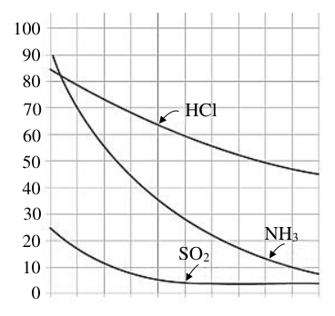
（A） 只有甲（B） 只有乙（C） 只有丙（D） 甲與乙（E） 乙與丙答案：（E）
詳解與考點 正解：題幹要分別判讀甲、乙、丙；氣體溶解度隨溫度升高的變化與0℃曲線排序是關鍵。E：乙、丙都正確，故選E。乙：圖7中HCl、NH3、SO2在0～60℃都隨溫度升高而下降；CO2數據也由0.334、0.169、0.097降至0.058g/100g水，故乙正確。丙：4℃氣泡飲料進入約37℃體內後，CO2溶解度因升溫大幅下降而逸出，造成打嗝，故丙正確。
A：甲錯誤，0℃時圖7的NH3約90最高、HCl約85次之、SO2約25最低；正確順序是SO2<HCl<NH3，不是NH3<HCl<SO2。
B：乙、丙皆正確，不能只選乙，錯誤。
C：乙也正確，不能只選丙，錯誤。
D：甲錯誤，不能選甲與乙，錯誤。
本題考點：曲線判讀——比較同一溫度的縱軸高度可判溶解度大小；氣體溶解度——溫度升高時通常下降；生活應用——飲料升溫使CO2逸出而產生打嗝。
氧化亞銅為一種半導體材料，其奈米粒子會懸浮在水中，表面可以吸收光能，將二氧化碳轉化成甲醇（ \( \mathrm{CH_3OH} \)）與氧氣，但氧化亞銅奈米粒子並不會被消耗。持續通入二氧化碳於含氧化亞銅的水溶液中使反應進行，發現光照期間，可觀察到氧氣生成；若將光源關閉，則沒有氧氣生成。
第 35 題 （多選）
關於實驗結果與推論的敘述，下列哪些正確？（應選 3 項）
（A） 二氧化碳進行還原作用產生甲醇（B） 含有二氧化碳的水溶液呈鹼性（C） 光照是產生甲醇的必要條件（D） 此反應所產生的甲醇與氧氣均難溶於水中（E） 此光照反應式為：\( 2\,CO_2 + 4\,H_2O \rightarrow 2\,CH_3OH + 3\,O_2 \)答案：（A）（C）（E）
詳解與考點 正解：題幹說氧化亞銅不被消耗，且光照才生成氧氣，應從氧化還原、反應條件與守恆判斷。A：CO₂ 中碳的氧化數為 +4，CH₃OH 中碳為 -2，氧化數下降，二氧化碳被還原生成甲醇，正確。C：光照時有氧氣、關閉光源後無氧氣，顯示光照是此反應產生甲醇與氧氣的必要條件，正確。E：2CO₂+4H₂O→2CH₃OH+3O₂ 中 C、H、O 原子數均守恆，且碳由 +4 降至 -2 的得電子量與氧的失電子量相平衡，正確。
B：CO₂ 溶於水可形成碳酸，水溶液呈酸性而非鹼性，錯誤。
D：甲醇含 OH，可與水形成氫鍵並與水互溶；不能說甲醇與氧氣都難溶於水，錯誤。
本題考點：氧化還原——氧化數下降為還原，CO₂ 的碳由 +4 變 -2；化學反應式判讀——先檢查原子守恆，再檢查電子轉移；實驗條件——關閉單一條件即停止生成，可判該條件為必要條件。
第 36 題
經過更仔細的實驗觀察，發現另有少量為氫氣的副產物生成，可能是在光照下，水亦可被分解為氫氣與氧氣，反應式為：\( 2\,\mathrm{H_2O} \rightarrow 2\,\mathrm{H_2} + \mathrm{O_2} \)。若某次實驗結果的氣體產物為氧氣 1.40 莫耳與氫氣 0.40 莫耳。試問該次實驗生成多少莫耳的甲醇？
（A） 0.4（B） 0.6（C） 0.8（D） 1.0（E） 1.2答案：（C）
詳解與考點 正解：題幹有主反應與水分解副反應共生成氧氣，先由氫氣反推副反應的氧氣，再扣除求主反應氧氣。副反應 2H2O→2H2+O2，其中 H2：O2=2:1。H2=0.40 莫耳，所以副反應 O2=0.40÷2=0.20 莫耳。總 O2=1.40 莫耳，主反應 O2=1.40-0.20=1.20 莫耳。主反應 2CO2+4H2O→2CH3OH+3O2，其中 CH3OH：O2=2:3，所以 CH3OH=1.20×2÷3=0.80 莫耳，選 C。
A：0.4 莫耳是題目已知的氫氣量；依副反應只能先換得 O2=0.40÷2=0.20 莫耳，不能直接當作甲醇量，A 錯誤。
B：0.6 莫耳無法由題示係數及 1.40、0.40 莫耳正確換算得到；依序應算 0.40÷2=0.20、1.40-0.20=1.20、1.20×2÷3=0.80，B 錯誤。
D：若甲醇為 1.0 莫耳，依 CH3OH：O2=2:3 會對應主反應 O2=1.0×3÷2=1.50 莫耳，但扣除副反應後只有 1.20 莫耳，D 錯誤。
E：1.2 莫耳是由 1.40-0.20 得到的主反應氧氣量；還須乘以 2÷3 才是甲醇量，E 錯誤。
本題考點：多反應產物分配——共用產物 O2 時，先以專屬產物 H2 反推副反應的 O2，再由總量扣除；化學計量——依反應式係數以 CH3OH：O2=2:3 換算莫耳數。
虱目魚原為海生魚類，但可被漁民養殖在鹹水池或淡水池裡，而且淡水養殖的生產效率高於鹹水養殖。虱目魚不耐低溫，發生寒害時，鹹水池的虱目魚死亡率遠低於淡水池的。學者研究發現，鹹水魚耐寒的特性可能與調鈣蛋白（Regucalcin, RGN）有關。RGN 能與鈣離子結合，藉著鈣離子所調控的基因表現網絡，影響生物體對低溫的調適能力。為此，研究者先檢測虱目魚不同器官的組織，測得 RGN 基因所表現的 mRNA 量（RGN mRNA）。此量值相對於管家基因（即經常性表現維持細胞存活之一般基因）的數值如圖 8 甲所示。同時，也測得長期養殖在鹹水池和淡水池虱目魚的 RGN mRNA 數量差異，如圖 8 乙所示。
第 37 題 （多選）
根據圖 8 甲及圖 8 乙的資訊，下列哪些正確？（應選 3 項）
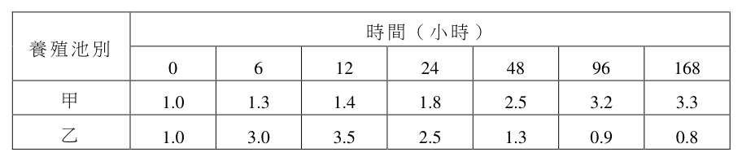
（A） R G N 基因的表現量在器官之間有明顯的不同（B） 抗低溫的機制可能和 RGN 有關而與離子濃度無關（C） 對低溫產生適應的生理調整不只牽涉 R G N 基因產物（D） RGN mRNA 之生成量對淡水魚適應低溫是必要的（E） 從試驗設計觀點，產生圖 8 乙的資料取自血液樣本答案：（A）（C）（D）
詳解與考點 正解：題幹要求依兩圖判讀 RGN mRNA 的器官差異與鹹、淡水養殖差異。A：圖 8 甲中腦、鰓、心、腸、腎、肝、肌肉、脾等器官的相對量高低不同，故 A 正確。C：題述 RGN 藉鈣離子調控的基因表現網絡影響低溫適應，表示生理調整不只涉及 RGN 一種基因產物，故 C 正確。D：官方答案為 A、C、D；惟現有文字資料未附圖 8，無法核對圖中是否另有足以支持 D 所稱「必要性」的低溫處理或阻斷實驗。若圖 8 乙只有鹹、淡水魚的 RGN mRNA 表現量與耐寒差異，該比較只能顯示相關性，不能單獨證成 RGN mRNA 生成量是淡水魚適應低溫的必要條件。
B：RGN 能與鈣離子結合並透過鈣離子調控的網絡作用，不能說耐低溫與離子濃度無關，B 錯誤。
E：題幹說明檢測的是不同器官組織，圖 8 乙的資料不能據此判為血液樣本，E 錯誤。
本題考點：基因表現圖判讀——不同器官的 mRNA 相對量不同可判定表現量有差異；因果推論判準——組間表現量與耐寒性的共同變化只能支持相關，若要證成某因子具有必要性，還須有抑制、剔除或其他能檢驗缺少該因子後結果的證據。
第 38 題
為了試驗虱目魚對抗低溫之調適能力，研究者分別將畜養於 28℃淡水池和鹹水池的魚移置 18℃，並逐時測量 RGN mRNA 的量，再以各自 0 時數值為基準值進行校正，得資料如表 2 所示。
（a）圖 9 甲為表 2 養殖池甲之虱目魚移到 18℃環境下，其 RGN mRNA 生成量隨時間的變化情形。試參考圖 9 甲的繪圖方式，於圖 9 乙中補足表 2 養殖池乙之虱目魚 RGN mRNA 之變化趨勢。（1 分）
（b）從圖 8 及圖 9 甲綜合判斷圖 9 甲應該是來自哪種養殖池？並說明判斷理由。
表 2 養殖池別 時間（小時） 0 6 12 24 48 96 168 甲 1.0 1.3 1.4 1.8 2.5 3.2 3.3 乙 1.0 3.0 3.5 2.5 1.3 0.9 0.8
本題選項為上圖中的 A／B／C／D，請對照圖片作答。
標準答案未收錄
詳解與考點 參考方向：（a）繪圖——依表 2 乙池數值（0h=1.0、6h=3.0、12h=3.5、24h=2.5、48h=1.3、96h=0.9、168h=0.8），在圖 9 乙描點並連線，呈現「先快速升高至約 12 小時達峰（約 3.5），其後下降回到約 1 以下」的單峰曲線。（b）判斷——圖 9 甲（甲池）為隨時間「持續緩升、長時間後仍維持高值」的趨勢，對照圖 8 乙「鹹水池 RGN mRNA 較高、且鹹水魚較耐寒」，可判斷圖 9 甲應勾選「鹹水」。理由：鹹水池魚移至低溫後 RGN mRNA 能持續且穩定地升高並維持，顯示其調鈣蛋白表現對低溫的長期調適能力較強，與鹹水池死亡率低、較耐寒一致。此為 AI 整理之解題方向，非官方標準答案，須對照官方評分原則。
第 39 題 （多選）
RGN 基因在脊椎動物中相當保守，其功能為調控細胞內的鈣離子。此基因也被發現和生物體之老化相關，RGN 蛋白又稱衰老標記蛋白-30（SMP30），其含量隨年齡增加而減少。下列敘述哪些正確？（應選 3 項）
（A） 養在鹹水池的虱目魚不表現 RGN 基因（B） RGN 基因可能不存在於大鼠肝細胞中（C） 鰻魚類應該有 RGN 基因，且能表達 RGN 蛋白（D） 人和大鼠的 RGN 基因序列相似度應該高於大鼠和小丑魚的序列相似度（E） 生物體中的某些單一個基因可能對應於多個不同的性狀答案：（C）（D）（E）
詳解與考點 正解：題幹指出 RGN 在脊椎動物中相當保守，且同時參與鈣離子調控、耐低溫與老化，應從演化親緣與一因多效判斷。C：鰻魚類屬脊椎動物，應具有 RGN 基因並能表達 RGN 蛋白，正確。D：人與大鼠同為哺乳類、親緣較近，人和大鼠的 RGN 基因序列相似度應高於大鼠和小丑魚之間，正確。E：RGN 同時涉及鈣離子調控、耐低溫適應與老化（SMP30），符合一個基因可影響多個性狀的一因多效，正確。
A：圖 8 乙顯示鹹水池虱目魚仍表現 RGN，且表現量更高，並非不表現。
B：RGN（SMP30）是保守基因，且其含量隨年齡變化的研究多以大鼠肝為材料，因此大鼠肝細胞應有此基因。
本題考點：保守基因判讀——同屬脊椎動物通常可推知具有該保守基因；親緣關係判準——親緣越近，基因序列相似度通常越高；一因多效——同一基因影響多個性狀即可判定。
海洋表面顏色（水色）的觀測，在海洋生態系的生物地球化學現象研究上極為關鍵。生態系的基礎生產力是指初級生產者所生產的有機物質。植物性浮游生物能夠吸收二氧化碳進行光合作用，是海洋生態系主要的生產者，其數量多寡影響該海域各級消費者之生物量。
通常表層營養鹽豐富的海域，有利於生產者行光合作用及繁殖，可增加基礎生產力。植物性的生產者之體內含有葉綠素會使水色從偏藍色轉向偏綠。因此，利用衛星遙測水色之變化，即可以推估當地海域的基礎生產力，進一步估計該海域之資源量。
然而，海水中葉綠素的濃度會受到海洋或大氣環境的影響而有很大的變化，圖 10 顯示某聖嬰年及某反聖嬰年十二月時（圖 10 甲與圖 10 乙並未直接對應何者為聖嬰年或反聖嬰年），由太平洋水色影像轉換的葉綠素濃度灰階圖，它能夠明顯反映海表面植物性浮游生物的多寡。圖中灰階越接近黑色（灰階值越小）代表葉綠素濃度越高，反之灰階越接近白色（灰階值越大）代表葉綠素濃度越低。
第 40 題
（a）圖 10 甲為（聖嬰、反聖嬰）年之水色影像圖。（1 分）（b）圖 10 甲中，美國本土西岸近海有很（高、低）的葉綠素濃度。（1 分）（c）圖 10 甲與圖 10 乙可知，不論在聖嬰年或反聖嬰年，美國本土西岸近海的葉綠素濃度主要受到何種海水運動的影響？（2 分）
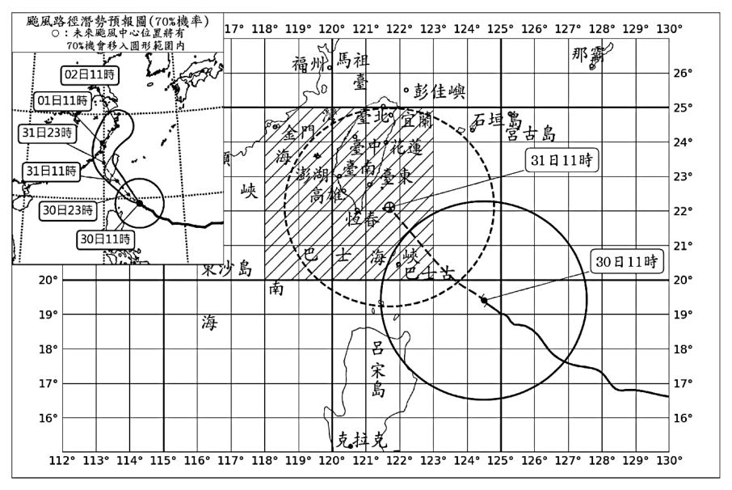
本題選項為上圖中的 A／B／C／D，請對照圖片作答。
標準答案未收錄
詳解與考點 參考方向：（a）依 passage，灰階越黑代表葉綠素濃度越高、生產力越高。聖嬰年時赤道東太平洋湧升流減弱、營養鹽減少、葉綠素偏低（影像偏白）；反聖嬰年湧升流增強、葉綠素偏高（偏黑）。應比較圖 10 甲、乙赤道帶整體偏白或偏黑來勾選甲為「聖嬰或反聖嬰」年。（b）美國本土西岸近海若灰階偏黑（葉綠素濃度高）則勾「高」，偏白則勾「低」；依湧升流盛行的美西沿岸通常營養鹽豐富，多為高葉綠素。（c）不論聖嬰或反聖嬰年，美西近海葉綠素濃度主要受「沿岸湧升流（上升流）」影響——湧升流把深層富營養鹽海水帶到表層，促進浮游植物生長而提高葉綠素。註：本批圖檔未含圖 10 甲、乙之水色影像，甲、乙實際黑白判讀須以原卷影像為準。此為 AI 整理之解題方向，非官方標準答案，須對照官方評分原則。
第 41 題 （多選）
關於圖甲與圖乙，以下描述哪些正確？（應選項） 10 10 3
（A） 太平洋赤道地區的洋流流速與流向能夠影響葉綠素濃度的分布（B） 因為反聖嬰年時赤道的西風較弱，圖 10 乙赤道地區的葉綠素的濃度比圖 10 甲低（C） 由於反聖嬰年時太平洋貿易風（信風）增強，圖 10 甲中赤道地區的高濃度葉綠素的分布範圍相較於圖 10 乙更向西延伸（D） 圖 10 甲、乙兩圖在中緯度地區，高濃度葉綠素的分布範圍與北太平洋的表面洋流系統有關（E） 圖 10 甲、乙在南太平洋澳洲東側沿岸區域皆可觀測到高濃度的葉綠素，這主要是由於當時海表層水面溫度較低，促進生物的葉綠素合成反應答案：（A）（C）（D）
詳解與考點 正解：題幹比較聖嬰與反聖嬰年葉綠素分布，關鍵是表面洋流、信風與湧升流改變營養鹽供應。A：赤道洋流與湧升流會搬運營養鹽，影響葉綠素濃度分布，正確。C：反聖嬰年貿易風增強，表層暖水向西堆積、東太平洋湧升加強，使圖甲的高濃度葉綠素帶較圖乙向西延伸，正確。D：中緯度高濃度葉綠素分布與北太平洋表面洋流系統及其交會區有關，正確。
B：赤道地區主要為東風信風，不是西風；且反聖嬰年湧升較強，葉綠素不應較低，B 錯誤。
E：澳洲東側高葉綠素的主要關鍵是營養鹽供應與湧升，不是「水溫較低促進葉綠素合成反應」，E 錯誤。它看起來對，是因為低溫海水常與湧升現象同時出現，但低溫本身不是主要判準。
本題考點：聖嬰與反聖嬰——信風增強會強化東太平洋湧升與營養鹽供應；葉綠素判讀——高濃度優先連結營養鹽與洋流，不可只以水溫解釋；洋流系統——中緯度海域分布須連結表面環流。
第 42 題 （多選）
某海洋生態系中，矽藻是磷蝦的食物，而磷蝦為鯨魚的食物。矽藻的生長需要鯨魚排泄物中的鐵離子。依此敘述，若此海域鯨魚瀕臨局部滅絕，經長時間觀察可能會發現哪些現象？（應選 2 項）
（A） 水色的灰階值變小（B） 矽藻的數量上升（C） 磷蝦的數量下降（D） 生態系總生物質量上升（E） 該生態系統面臨崩解答案：（C）（E）
詳解與考點 正解：食物鏈為矽藻→磷蝦→鯨魚，且矽藻生長需鯨魚排泄物中的鐵離子；鯨魚消失會中斷這個回饋。C：鐵離子供應減少使矽藻減少，磷蝦的食物來源隨之減少，磷蝦數量下降，正確。E：基礎生產者受限、能量流受阻，又失去頂級消費者，長期可能使生態系面臨崩解，正確，故選 C、E。
A：矽藻減少表示葉綠素濃度降低，水色灰階值應變大而非變小，錯誤。
B：缺乏鐵離子會限制矽藻生長，數量應下降而非上升，錯誤。
D：各營養階層普遍受影響，總生物質量應下降而非上升，錯誤。它看起來可能選 A，是因為忽略灰階值與葉綠素濃度的反向關係：越黑代表濃度越高、灰階值越小。
本題考點：食物鏈連鎖效應——基礎生產者減少會使上層消費者食物不足；關鍵物種回饋——鯨魚提供鐵離子可支持矽藻生長；遙測判讀——葉綠素濃度降低時灰階值變大。
第 43 題
海水中葉綠素的濃度會受到海洋或大氣環境的影響而有很大的變化。依文本及上題題幹之資訊，以直線連接影響海水葉綠素濃度（水色）的因子。（4 分）表層營養鹽● ●使葉綠素濃度或顏色提升二氧化碳● 磷蝦（消費者生物量）● ●使葉綠素濃度或顏色下降鯨魚排泄物（鐵離子）●
本題選項為上圖中的 A／B／C／D，請對照圖片作答。
標準答案未收錄
詳解與考點 參考方向：依文本判斷各因子對葉綠素濃度（水色）的作用方向。連到「使葉綠素濃度或顏色提升」：表層營養鹽（利於光合與繁殖）、二氧化碳（浮游植物行光合的原料）、鯨魚排泄物中的鐵離子（供矽藻生長）。連到「使葉綠素濃度或顏色下降」：磷蝦（消費者，會攝食浮游植物／矽藻，使生產者數量減少）。即：表層營養鹽、CO2、鐵離子→提升；磷蝦（消費者生物量）→下降。此為 AI 整理之解題方向，非官方標準答案，須對照官方評分原則。
阿明 10 月底在花東山區野外調查時，手機沒有訊號，所幸身上有乾濕球溫度計、氣壓計與收音機。此時他從收音機的新聞播報得知中央氣象署已針對康芮颱風發布了颱風警報：「強烈颱風康芮 30 日 11 時中心位置在鵝鑾鼻東南方約 470 公里的海面上，中心氣壓 915 百帕，近中心最大風速每秒 53 公尺，達 16 級風，7 級風暴風半徑 320 公里，10 級風暴風半徑 120 公里，以每小時 19 公里速度向西北進行」，圖 11 為康芮颱風的路徑預報圖。根據以上資訊回答 44 至 46 題。
第 44 題 （多選）
為了估計自己所在高度，阿明先從收音機獲得山下的基本氣象資料（氣溫、氣壓、濕球溫度、相對濕度等），再利用山下與所在位置所量到之資料的差異推估高度，在地球大氣的分布為正常情況下，下列哪些方法不可行？（應選 2 項）
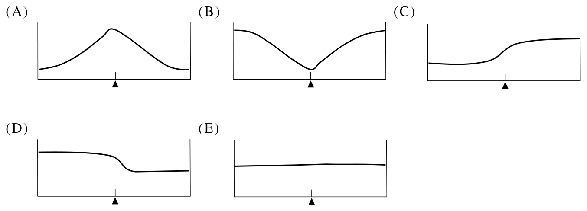
（A） 測量氣溫，以氣溫每 1 公里下降（B） 測量氣壓，以氣壓每公里下降百帕估計 1 100（C） 測量濕球溫度，以濕球溫度每 1 公里下降 10 ℃估計（D） 測量水的沸點，以水的飽和曲線推估氣壓，再以氣壓每 1 公里下降 100 百帕估計（E） 測量相對濕度，再以相對濕度每 1 公里下降 10 %估計答案：（C）（E）
詳解與考點 正解：題幹要求判斷以山下與所在地氣象資料差異估計高度時，何種量沒有穩定的高度變化規律。C：濕球溫度沒有「每 1 km 下降 10 ℃」的固定遞減規律，且此數值過大，不能據以估高，正確。E：相對濕度受水氣與雲況影響，隨高度變化不規則，沒有每 1 km 下降 10 % 的穩定關係，正確。
A：正常對流層氣溫約每上升 1 km 降低 6.5 ℃，可作近似估計依據，錯誤。
B：氣壓約每上升 1 km 下降 100 hPa，可作近似估計依據，錯誤。
D：水的沸點可由飽和曲線推得氣壓，再利用氣壓隨高度下降的關係估高；「沸點→飽和蒸氣壓曲線→氣壓→高度」是合理的物理鏈，故非不可行方法。
本題考點：高度估計判準——須選擇與高度有穩定、可量化關係的物理量；正常大氣近似——對流層氣溫約每 1 km 降 6.5 ℃、氣壓約每 1 km 降 100 hPa；相對濕度與濕球溫度受水氣條件影響大，不能套用固定遞減率。
第 45 題
若颱風移動方向與移速變化不大，中心將在 31 日 15 時通過阿明所在地區，阿明從 31 日 03 時到 01 日 03 時連續觀測氣壓，並將其隨時間之變化畫圖記錄，各圖的橫軸是時間往右增加，三角形代表 31 日 15 時，下列何者最可能是氣壓隨時間變化的曲線？
本題選項為上圖中的 A／B／C／D，請對照圖片作答。
答案：（B）
詳解與考點 正解：颱風是低壓系統，中心通過測站時氣壓降到最低，通過後再回升；題幹標示的三角形代表 31 日 15 時中心通過阿明所在地的時刻。因此選圖判準只有一條：氣壓曲線的**最低點必須落在三角形所標的時刻**，且前後呈先降後升的深谷形。依此判準檢視五張圖，只有 B 的曲線在三角形時刻出現明顯最低谷、前後對稱回升，故 B 為正解。
A、C、D、E：其餘四張圖至少違反上述判準之一——最低點沒有落在三角形所標時刻，或該時刻反而是高點或平緩無谷底，皆與低壓中心通過時的氣壓變化不符，故均錯誤。作答時逐張比對「最低點位置」與「三角形位置」即可排除。
本題考點：颱風氣壓變化判圖——中心通過時氣壓最低，先降後升呈 V 或 U 形深谷；圖形題判準法——先把文字條件（中心通過時刻）轉成圖上的一個檢查點，再逐張比對該點是谷底或峰頂，不必細看整條曲線。
第 46 題
（a）康芮颱風過去路徑幾近直接朝向臺灣而來，試問形成這種路徑主要受到什麼天氣系統影響？（1 分）（b）若康芮颱風以東南往西北的方向通過蘭嶼上空，試問颱風中心通過蘭嶼前後三小時左右，當地主要風向最可能的變化為何？（2 分）（c）假使此時南海大約同一個緯度上還有另一強度相當的颱風，此兩颱風彼此會互相影響，產生藤原效應。藤原效應是兩個颱風相互靠近牽制的現象，會使兩個颱風移動路徑受到影響，通常使兩颱風以共同質量中心作逆鐘向互繞運動，增加路徑預報之難度。若康芮颱風和此位在南海的颱風產生藤原效應，中央氣象署將會對康芮颱風的移動路徑往哪一個方向做修正？（1 分）
本題選項為上圖中的 A／B／C／D，請對照圖片作答。
標準答案未收錄
詳解與考點 參考方向：(a)康芮路徑幾近直撲臺灣，主因是太平洋（副熱帶）高壓的駛流引導，颱風沿高壓南側偏西北方向移動。(b)颱風中心由東南往西北通過蘭嶼，依氣旋逆時針環流，中心通過「前」當地吹偏北風（颱風在其東南側），中心通過「後」轉為偏南風，故風向約由偏北轉偏南（逆時針偏轉）。(c)藤原效應使兩颱以共同質心逆時針互繞；康芮在北、南海颱風在西南／南側，互繞會把康芮路徑往偏西（向南海颱風方向）牽引，故氣象署會把康芮路徑往「偏西」方向修正。此為 AI 整理之解題方向，非官方標準答案，須對照官方評分原則。
2024 年諾貝爾物理獎主題是仿效腦部神經網路，藉由變化數據節點之間連通的強弱，奠定人工智慧（AI）的基礎。圖 12 為探究神經細胞之間的連通機制，是 1963 年諾貝爾生理學或醫學獎主題的示意圖。通過神經細胞膜傳訊的機制放大圖如圖 13。
電路模型如圖 14，模型中 \( C_{\mathrm{M}} \) 代表細胞膜的內、外表面，以及其間的不導電物質。\( R_{\mathrm{Na}} \) 與 \( R_{\mathrm{K}} \) 為可變電阻，可以改變神經細胞之間連通的強弱，以處理資訊。其中 \( E_{\mathrm{Na}} \)、\( E_{\mathrm{K}} \) 與 \( E_{\mathrm{L}} \) 分別為離子 Na⁺、K⁺ 與其他離子的平衡電壓，相當於等效電池，可以推送或聚集對應的離子，維持細胞內外離子濃度差異。已知平衡電壓為 \( E = -\dfrac{\alpha T}{e}\log\dfrac{n_{\text{內}}}{n_{\text{外}}} \)，其中 \( n_{\text{內}} \) 與 \( n_{\text{外}} \) 分別為細胞內部與外部的離子濃度，\( \alpha > 0 \) 為轉換常數，\( T \) 為絕對溫度，\( e \) 為基本電量。依據以上資料回答下列問題。
第 47 題 （多選）
下列選項的單位，哪些與能量相同？（應選 2 項）
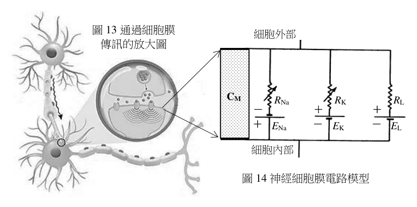
（A） e E（B） T（C） α / e（D） T / e（E） α T答案：（A）（E）
詳解與考點 正解：題幹公式 E=−(αT/e)·log(n內/n外) 中，log(n內/n外) 是濃度比值，沒有因次；因此要先由電壓 E 的因次反推 αT/e 的因次，再用「電量×電壓＝能量」判斷。E 的單位為 V，所以 [αT/e]=V。兩邊乘以 e，得 [αT]=[e]×V。e 是電量，故 [αT]=（電量）×（電壓）=C·V=J，與能量同單位。A：eE=（電量）×（電壓）=C·V=J，與能量同單位，正確。E：αT 由 [αT]=e×V=C·V=J，與能量同單位，正確，故選 AE。
B：T 是絕對溫度，單位為 K，不是能量單位，B 錯誤。它看起來對，是因為 αT 的確具有能量因次，但 α 不可省略。
C：由 [α]=J/K，故 [α/e]=J/(K·C)，不是能量，C 錯誤。
D：T/e 的因次為 K/C；只有 αT/e 才是電壓，T/e 並非能量，D 錯誤。
本題考點：因次分析——公式中的對數真數為濃度比，視為無因次，再以等式兩端單位相同反推未知量因次；電學與能量換算——電量×電壓＝能量，C·V=J，據此辨識 eE 與 αT。
第 48 題
假設 \( n_{\text{內}} \) 與 \( n_{\text{外}} \) 維持恆定，則在攝氏 27 度時的平衡電壓量值約是在攝氏 17 度時的多少倍？
（A） 27/17（B） 17/27（C） 300/290（D） 290/300（E） 38/36答案：（C）
詳解與考點 正解：題幹限定離子內、外濃度維持恆定，故 E＝－（T/e）·log（n內／n外）中的 log（n內／n外）與 e 都是常數，平衡電壓量值與絕對溫度 T 成正比；因此必須先把攝氏溫度換成 K。C：27 ℃＝27+273=300 K，17 ℃＝17+273=290 K，平衡電壓量值之比＝300/290，故 C 為正解。
A：27/17 是直接以攝氏溫度相除，27 ℃與 17 ℃不是絕對溫度，不能用於正比的比值計算，A 錯誤。
B：17/27 同樣直接使用攝氏溫度，且分子、分母分別未換為 290 K、300 K，B 錯誤。
D：正確比值應為攝氏 27 度對攝氏 17 度，即 300/290；290/300 是把前後溫度的分子分母倒置，D 錯誤。
E：38/36 不是由 300 K 與 290 K 的絕對溫度比值化得，E 錯誤。
本題考點：絕對溫度——涉及溫度正比或比值時，先以 T＝攝氏溫度＋273 換算為 K；正比量判準——其餘因子固定時，E 的量值比＝兩個絕對溫度的比。
第 49 題
圖 15 為科學家探究細胞膜 Na⁺ 通道在導通狀況下的簡化直流電路，電壓 \( V \) 為細胞內外的電位差，\( I_{\mathrm{Na}} \) 為 Na⁺ 電流。假設 Na⁺ 通道的 \( I_{\mathrm{Na}} \)−\( V \) 特性為線性，且 \( E_{\mathrm{Na}} \) 為定值。圖 16 為實驗分析結果的數據與趨勢線，縱軸為電流 \( I_{\mathrm{Na}} \)，橫軸為電壓 \( V \)。若已知 \( V = E_{\mathrm{Na}} + I_{\mathrm{Na}} R_{\mathrm{Na}} \)，試分析並計算鈉離子通道的（a）平衡電壓 \( E_{\mathrm{Na}} \)，（b）電阻值 \( R_{\mathrm{Na}} \)。（4 分）
本題選項為上圖中的 A／B／C／D，請對照圖片作答。
標準答案未收錄
詳解與考點 參考方向：由 V=E_Na+I_Na·R_Na 改寫為 I_Na=(1/R_Na)·V −(E_Na/R_Na)，I 對 V 為直線，斜率＝1/R_Na，I=0 處的 V 即 E_Na。(a)平衡電壓 E_Na：讀趨勢線與 V 軸（I=0）的截距電壓即為 E_Na。(b)電阻 R_Na：取直線上兩點算斜率，R_Na＝ΔV/ΔI（I 以 mA、V 以 mV，換算後得單位）。本批所附圖 16 數據點無法清晰判讀，確切截距與斜率請以官方圖為準。此為 AI 整理之解題方向，非官方標準答案，須對照官方評分原則。
奈米級的二氧化鈦（\(\mathrm{TiO_2}\)）為一種光觸媒材料，當此光觸媒照光之後，可將周遭環境中的汙染物質分解，達到去汙與除臭的效果。而其原理主要是二氧化鈦光觸媒照光後，電子會從價帶躍遷到導電帶，使得二氧化鈦表面生成氫氧自由基（•OH）與超氧離子（\(\mathrm{O_2^-}\)），此兩者的活性很大可以將有機物分解成二氧化碳和水，達到淨化效果。此外，二氧化鈦光觸媒亦可在光的照射下催化水裂解產生氫氣和氧氣，為綠色能源與永續發展的重要觸媒。由於二氧化鈦光觸媒的導電帶與價帶的能階差（亦稱為能隙）大約為 3.20 eV，故所照的光源中光子能量必須高於此能量才能啟動催化反應，為了提升其催化活性與效率，許多研究利用不同的金屬摻雜來改變其能隙與催化特性。
第 50 題 （多選）
下列與上文相關的敘述，哪些正確？（應選 2 項）
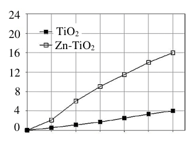
（A） 提供電子能量必可使電子由價帶跳到導電帶（B） 電子位於價帶的能量比位於導電帶低（C） 可利用改變光的入射角來調變光源中光子的能量（D） 加大照光強度與面積可能促使無法躍遷的電子躍遷（E） 增高照射的光頻率可能促使無法躍遷的電子躍遷答案：（B）（E）
詳解與考點 正解：題幹的關鍵條件是二氧化鈦的能隙約為 3.20 eV，光子能量必須高於能隙才可使電子由價帶躍遷至導電帶；判斷時要分清能階高低與單顆光子能量。B：價帶的能階低於導電帶，因此電子位於價帶時的能量較低，B 正確。E：光子能量 E=hν，增高照射光的頻率 ν 會提高每顆光子的能量；能量超過能隙後，原本無法躍遷的電子即可躍遷，E 正確。
A：電子躍遷必須取得高於能隙的能量，提供任意大小的電子能量不一定足夠；「必可」忽略門檻條件，A 錯誤。
C：光子能量由頻率決定，改變入射角只改變傳播方向，不改變頻率與單顆光子能量，C 錯誤。
D：加大照光強度或面積只會增加照到的光子數目或範圍，不會提高單顆光子的能量；能量仍低於能隙時，原本無法躍遷的電子不會因此躍遷，D 錯誤。它看起來對，是因為較強的光確實會讓更多符合能量門檻的電子躍遷，但不能補足單顆光子原先不足的能量。
本題考點：半導體能帶——價帶能階低於導電帶，電子跨越能隙才可躍遷；光子能量判準——E=hν，頻率提高則單顆光子能量提高，強度與入射角改變不等於提高單顆光子能量。
第 51 題
（a）欲啟動未摻雜二氧化鈦光觸媒的催化反應，可允許之最長波長約為多少 nm？（h＝6.63×10⁻³⁴ J·s、1 eV＝1.6×10⁻¹⁹ J、真空光速＝3.0×10⁸ m/s）（2 分）
（b）摻雜少量的鋅離子於二氧化鈦（Zn-TiO₂）後，恰可以使用波長 400 nm 的光激發催化。試在答題卷作答區中填入摻雜鋅離子後的奈米級二氧化鈦能隙變化，並說明理由。（2 分）
作答欄位——能隙：未摻雜的二氧化鈦（TiO₂）為 3.2 eV；摻雜少量鋅離子於二氧化鈦（Zn-TiO₂）為＿＿＿ 3.2 eV（空格填入＞、＜或＝）；說明理由：＿＿＿
本題選項為上圖中的 A／B／C／D，請對照圖片作答。
標準答案未收錄
詳解與考點 參考方向：(a)由 E=hc/λ 求最長波長。3.20 eV=3.20×1.6×10⁻¹⁹＝5.12×10⁻¹⁹ J；λ＝hc/E=(6.63×10⁻³⁴×3.0×10⁸)/(5.12×10⁻¹⁹)≈3.88×10⁻⁷ m≈388 nm，即最長約 388 nm。(b)空格填「＜」：400 nm 光子能量約 3.1 eV，比 3.2 eV 小，卻恰能激發，代表能隙變小。理由：能隙越小，所需光子能量越低、可激發的波長越長，故摻雜後能隙＜3.2 eV。此為 AI 整理之解題方向，非官方標準答案，須對照官方評分原則。
第 52 題 （多選）
有關二氧化鈦光觸媒與水裂解反應的相關敘述，下列哪些正確？（應選 2 項）
（A） 二氧化鈦光觸媒照光後產生的氫氧自由基具有 8 個價電子（B） 二氧化鈦是一種可溶於水的化合物（C） 水裂解產生氫氣與氧氣，為一吸熱反應（D） 氫氧自由基將有機物分解，產生二氧化碳的過程是作為還原劑（E） 水裂解反應產生氫氣與氧氣，屬於氧化還原反應答案：（C）（E）
詳解與考點 正解：題幹指出水裂解必須由光觸媒照光啟動，判斷關鍵是反應的能量變化與氧化數是否改變。C：水裂解為 2H2O→2H2+O2，需吸收光能打斷 O–H 鍵，故為吸熱反應。E：反應中 H 的氧化數由＋1 降為 0，O 的氧化數由−2 升為 0，氧化數改變，屬氧化還原反應，故 C、E 為正解。
A：氫氧自由基 •OH 的價電子數為 O 的 6 個加 H 的 1 個，共 7 個，並非 8 個；其帶有未成對電子、不滿足八隅體，正是活性很大的原因。它看起來對，是因為穩定分子常以八隅體判斷，但自由基本來就可能有未成對電子。
B：TiO2 為難溶於水的固體光觸媒，並非可溶於水的化合物。
D：•OH 將有機物氧化分解成 CO2 時，自身接受電子而被還原，角色是氧化劑，不是還原劑。它看起來對，是因為它參與分解反應，但判斷氧化劑或還原劑必須看自身得失電子。
本題考點：水裂解的能量判斷——需持續吸收能量斷鍵的反應為吸熱反應；氧化還原反應判準——反應前後元素氧化數改變即為氧化還原；氧化劑判準——使他物氧化、自己得電子被還原者為氧化劑。
第 53 題
圖 17 顯示不同照光時間下，每克觸媒催化所產生的氫氣毫莫耳數（mmol/g），若使用 1.0 克的觸媒進行催化反應，照光 6 小時條件下，則 Zn-TiO₂ 的氫氣生成量為 TiO₂ 的幾倍？（2 分）
本題選項為上圖中的 A／B／C／D，請對照圖片作答。
標準答案未收錄
詳解與考點 參考方向：本題須在「照光 6 小時」這同一時間點，分別讀出兩條曲線的縱座標（每克觸媒的氫氣生成量），再相除。由圖 17，6 小時時 Zn-TiO2（空心方塊）的曲線到達最頂端、約 16 mmol/g；TiO2（實心方塊）的曲線僅約 4 mmol/g。題目雖指定使用 1.0 g 觸媒，但縱軸已是「每克」的量，且求倍數時觸媒質量會約分掉、與質量無關，故直接取兩讀值之比：16 ÷ 4 = 4，即照光 6 小時時 Zn-TiO2 的氫氣生成量約為 TiO2 的 4 倍。摻雜 Zn 可調降能隙、提升水裂解效率，故產氫明顯較多。此為 AI 整理之解題方向，非官方標準答案，須對照官方評分原則（以圖上實際讀值為準）。
第 54 題
二氧化鈦光觸媒可用不同的方法製備，其中之一是將四氯化鈦與水反應產生二氧化鈦，此反應亦會同時生成氯化氫。試寫出此化學反應式（係數以最簡整數表示）。（2 分）
本題選項為上圖中的 A／B／C／D，請對照圖片作答。
標準答案未收錄
詳解與考點 參考方向：四氯化鈦 TiCl4 與水反應生成二氧化鈦 TiO2，同時放出氯化氫 HCl。先寫骨架 TiCl4 + H2O → TiO2 + HCl，再平衡：Ti 已平衡；Cl 有 4 個須配 4 HCl，故 H 共 4 個需 2 H2O，O 兩端各 2 個亦平衡。配平結果為 TiCl4 + 2 H2O → TiO2 + 4 HCl（係數最簡整數）。此為 AI 整理之解題方向，非官方標準答案，須對照官方評分原則。
烷類在充足的氧氣下，可進行燃燒反應，產生二氧化碳，並釋出熱量，可作為燃料使用。市售的液化天然氣是以甲烷為成分，液化石油氣則是丙烷與丁烷的混合物。表 3 為幾種烷類的分子式、分子量及莫耳燃燒熱。1 莫耳碳氫化合物完全燃燒生成二氧化碳和水時，所釋出的熱量稱為莫耳燃燒熱。
第 55 題
根據表 3 資料，下列敘述何者正確？
表3 化合物 分子式 分子量 莫耳燃燒熱（千焦耳/莫耳） 甲烷 \(\mathrm{CH_4}\) 16 890 乙烷 \(\mathrm{C_2H_6}\) 30 1560 丁烷 \(\mathrm{C_4H_{10}}\) 58 2874 戊烷 \(\mathrm{C_5H_{12}}\) 72 3509 辛烷 \(\mathrm{C_8H_{18}}\) 114 5460
（A） 因辛烷分子量較甲烷大，故 1 莫耳辛烷比 1 莫耳甲烷含有較多的分子數（B） 每克烷類燃燒釋出熱量的大小順序為：甲烷＞丁烷＞戊烷（C） 每克烷類燃燒釋出熱量皆大於 50 千焦耳（D） 燃燒 2 莫耳甲烷比燃燒 1 莫耳乙烷，所釋出的熱量要少（E） 由表 3 資料，可以推測己烷的莫耳燃燒熱約為 6200（千焦耳/莫耳）答案：（B）
詳解與考點 正解：題幹要求比較每克烷類燃燒熱，關鍵是表中的莫耳燃燒熱必須除以分子量，不能直接比較莫耳數值。B：甲烷每克燃燒熱=890÷16=55.625，約 55.6 kJ/g；丁烷=2874÷58=49.551…，約 49.6 kJ/g；戊烷=3509÷72=48.736…，約 48.7 kJ/g。因此甲烷＞丁烷＞戊烷，B 為正解。
A：1 莫耳任何物質都含同一個亞佛加厥數的分子；辛烷分子量較大不會使 1 莫耳分子數較多。
C：辛烷每克燃燒熱=5460÷114=47.894…，約 47.9 kJ/g，小於 50 kJ/g，不能說皆大於 50。
D：2 莫耳甲烷放熱=2×890=1780 kJ；1 莫耳乙烷放熱=1560 kJ，1780>1560，甲烷較多而非較少。
E：由表中碳數增加時的莫耳燃燒熱趨勢估計，己烷約為 4200 多 kJ/mol，6200 kJ/mol 明顯過高。
本題考點：燃燒熱換算——比較每克放熱時，一律用莫耳燃燒熱÷分子量；比較指定莫耳數時，再用莫耳燃燒熱×莫耳數；1 mol 的粒子數與物質種類、分子量無關。
第 56 題
（a）根據表 3，試推測丙烷的分子式為何？並計算其分子量為何？（2 分）（b）假設莫耳燃燒熱與烷類碳數大致呈線性關係，試列式推算丙烷的莫耳燃燒熱的數值為何？（單位：千焦耳/莫耳）（2 分）
表 3 幾種烷類的分子式、分子量及莫耳燃燒熱 化合物 分子式 分子量 莫耳燃燒熱（千焦耳/莫耳） 甲烷 \(\mathrm{CH_4}\) 16 890 乙烷 \(\mathrm{C_2H_6}\) 30 1560 丁烷 \(\mathrm{C_4H_{10}}\) 58 2874 戊烷 \(\mathrm{C_5H_{12}}\) 72 3509 辛烷 \(\mathrm{C_8H_{18}}\) 114 5460
標準答案未收錄
詳解與考點 參考方向：(a) 烷類通式 CnH(2n+2)，丙烷碳數 3，故分子式 C3H8；分子量＝12×3 + 1×8 = 44。(b) 假設莫耳燃燒熱與碳數呈線性，取相鄰已知值求每增 1 個碳的增量，例如乙烷（C2）1560 與丁烷（C4）2874 相差 1314 kJ 對應 2 個碳，每碳約 657 kJ；以乙烷為基準，丙烷＝1560 + 657×(3−2) ≈ 2217 kJ/mol（依所取兩點不同，約 2200 kJ/mol 上下皆合理）。須列出線性關係式與代入過程。此為 AI 整理之解題方向，非官方標準答案，須對照官方評分原則。
第 57 題 （多選）
關於液化天然氣與液化石油氣完全燃燒的敘述，下列哪些正確？（不考慮市售液化天然氣與液化石油氣含有的其他雜質）（應選 2 項）
表 3 化合物 分子式 分子量 莫耳燃燒熱（千焦耳/莫耳） 甲烷 \(\mathrm{CH_4}\) 16 890 乙烷 \(\mathrm{C_2H_6}\) 30 1560 丁烷 \(\mathrm{C_4H_{10}}\) 58 2874 戊烷 \(\mathrm{C_5H_{12}}\) 72 3509 辛烷 \(\mathrm{C_8H_{18}}\) 114 5460
（A） \(\mathrm{CH_4 + 2\,O_2 \rightarrow CO_2 + 2\,H_2O}\) 是液化天然氣完全燃燒的平衡反應式（B） 假設液化石油氣含有等莫耳數的丙烷與丁烷。完全燃燒 100 克的液化石油氣釋出的總熱量，一半來自丙烷，另一半來自丁烷（C） 1 克液化天然氣與 1 克液化石油氣完全燃燒，所需氧氣的莫耳數相同（D） 1 克液化天然氣與 1 克液化石油氣完全燃燒，會產生相同莫耳數的水（E） 在釋出 3500 千焦耳的條件下，分別使用液化天然氣和液化石油氣完全燃燒，液化天然氣會產生較少莫耳數的二氧化碳答案：（A）（E）
詳解與考點 正解：題幹指出液化天然氣的主成分為甲烷，完全燃燒須依原子守恆配平；A：CH4+2O2→CO2+2H2O 的 C、H、O 原子數兩側分別相同，為正確的平衡反應式。E：釋出 3500 kJ 時，甲烷的莫耳燃燒熱約 890 kJ/mol，所需甲烷為 3500÷890≈3.93 mol，生成 CO2 為 3.93 mol；液化石油氣若以丙烷、丁烷等莫耳混合，平均莫耳燃燒熱約為(2217+2874)÷2≈2546 kJ/mol，需 3500÷2546≈1.37 mol 混合氣，每莫耳平均含 3.5 mol C，生成 CO2 約 1.37×3.5≈4.80 mol。因此液化天然氣生成較少莫耳數的 CO2，E 正確。
B：等莫耳混合不代表兩者燃燒放熱各半；丙烷與丁烷的莫耳燃燒熱不同，丁烷每莫耳釋熱較多。
C：1 g 甲烷與 1 g 液化石油氣的分子量及完全燃燒所需 O2 比例不同，所需氧氣莫耳數不會相同。
D：1 g 不同烷類的含氫比例不同，完全燃燒生成水的莫耳數不會相同。
本題考點：烷類完全燃燒——以原子守恆配平 CH4+2O2→CO2+2H2O；燃燒熱比較——固定放熱量時，用熱量除以莫耳燃燒熱求燃料莫耳數，再依碳原子數求 CO2；等莫耳混合不等於各成分放熱相等。
其他年度
回到學科能力測驗自然的年度總覽 ，
或到學科能力測驗題庫首頁 看其他科目。
題目與標準答案出自大考中心 學測歷年試題（依著作權法 §9，考試試題不受著作權保護）。依中華民國《著作權法》第 9 條第 1 項第 5 款，
依法令舉行之各類考試試題不得為著作權之標的，得自由利用。詳解為 AI 整理的學習輔助，
並非官方標準答案 ；中華民國會修訂，引用前請對照現行版本查證。